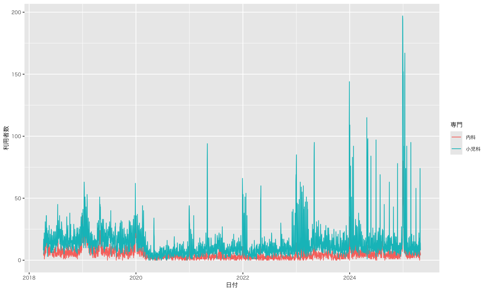

高校生のためのRではじめるデータサイエンス入門
KUGS高大接続プログラム Webセミナー
![]()
July 22, 2025
データサイエンスとは何か
既知のデータから未知の知見を得る
- 教科書や政府統計などの図
- 新しい解釈を生みにくい
- ➡ 生データを新たに作る ➡ 難しい
- ➡ 生データから新しい図を作る ➡ 簡単ではないがチャレンジ可能！
既知のデータから未知の知見を得る
- ビッグデータ
- 個々のデータを結合、集積させる
- エビデンスベースの○○
情報の高大接続
学習指導要領
イ（ウ） データの収集，整理，分析及び結果の表現の方法を適切に選択し，実行し，評価し改善することでは，データを問題の発見・解決に活用するために，必要なデータの収集について，選択，判断する力，それに応じて適切なデータの整理や変換の方法を判断する力，分析の目的に応じた方法を選択，処理する力，その結果について多面的な可視化を行うことにより，データに含まれる傾向を見いだす力を養う。 また，データの傾向に関して評価するために，客観的な指標を基に判断する力，生徒自身の考えを基にした適正な解釈を行う力を養う。 更に，地域や学校の実態及び生徒の状況に応じて，数学科と連携し，データを収集する前に，分析の構想を練り紐付ける項目を洗い出したり，外れ値の扱いについて確認したり，データの傾向について評価するために仮説検定の考え方などを取り扱ったりすることも考えられる。
学習指導要領
例えば，データの型式に関しては，表形式以外の時系列データ，SNS などにおいて個人と個人の繋つながりを表現するためのデータ，項目（キー）と値（バリュー）をセットにして値を格納するキー・バリュー形式のデータを扱うことが考えられる。 また，気象データ，総務省統計局のデータ及び国や地方公共団体などが提供しているオープンデータなどについて扱い，データ収集の偏りについても考え，それらのデータを表計算ソフトウェアや統計ソフトウェアで扱うことができるように整理，加工し，適切な分析や分かりやすい可視化の方法について話し合い，これらを選択して実施し，その結果に関する生徒個々人の解釈をグループで協議し，評価する学習活動などが考えられる。 更に，テキストマイニングの学習として，新聞記事や小説などをテキストデータとして読み込み，適当な整形等を行った上で，単語の出現頻度について調べさせ，出現頻度に応じた文字の大きさで単語を一覧表示したタグクラウドを作らせ，単語の重要度や他の単語との関係性を捉える学習活動などが考えられる。英語と日本語では，テキストマイニングをする際にどのような部分に違いがあるのかについて討論したり，実際にテキストマイニングを行って比較したりする活動なども考えられる。
なぜRなのか
なぜRなのか
- Cf. Microsoft Excel / SPSS / python
- 無料
- ITベンダーから自由に（予算；分析；可視化）
- コード
- 再現可能性
- マウス操作と違い､手順を説明する必要性が少ない（真似しやすい）
- 操作を忘れてもコードが残る
- ミスも再現できる
- 使い回せる
- 作業の効率化
- 図を使ったコミュニケーションや分析自体に時間を使える
- 安全性（元データは加工しない）
- ➡ 初期コストはすぐに回収できる
- 再現可能性
なぜRなのか
- 豊富な可視化ツール
- ggplot2(公式サイト)
- カラーパッケージ
- 豊富な出力パッケージ（quarto）
- Documents
- Presentations
- Dashboards
- Website
- このウェブサイトもQuartoの出力パッケージを使って作成
- ➡ YAML（ファイル冒頭部分）を変えるだけ
- この他､各図表を個別に出力可能（pngファイル；csvファイル）
なぜRなのか
- 親切なコミュニティ
- 各専門分野の研究者が､当該分野の分析に最適化したパッケージを作っている
- 困っていることはみんな一緒（先達の回答が参考になる）
- 簡易的な記述法
- markdown
Rの実例
Rでできること
- 作図
- 5 Named Graphs(5NG)：棒グラフ；ヒストグラム；箱ひげ図；散布図；折れ線グラフなど
- データ解析
- 因子分析や回帰分析など
- スクレイピング
- ウェブサイトなどからデータを一括取得
- テキスト分析
- テキストを量的に解析（質的ではなく）
- 地図情報
Rの実例
金沢広域急病センター利用者数
野生鳥獣の放射線モニター調査結果
Rの実例：金沢広域急病センター利用者数
Rの実例：金沢広域急病センター利用者数
Code
df_hospital_long |>
filter(!if_any(everything(), is.na)) |>
arrange(日付) |>
group_by(専門) |>
mutate(移動平均 = rollmean(利用者数, k = 90, fill = NA, align = "right")) |>
ggplot(aes(x = 日付, y = 移動平均, color = 専門, group = 専門)) +
geom_line() +
scale_x_date(
date_breaks = "3 months",
labels = label_date_short()
) +
scale_color_paletteer_d("awtools::mpalette")Rの実例：金沢広域急病センター利用者数
Code
# 矩形のデータフレームを作成
rects <- data.frame(
xmin = as.Date("2020-04-16"),
xmax = as.Date("2021-09-30"),
ymin = -Inf,
ymax = Inf,
label = "緊急事態宣言" # 凡例に表示するラベル
)
df_hospital_long |>
filter(!if_any(everything(), is.na)) |>
arrange(日付) |>
group_by(専門) |>
mutate(移動平均 = rollmean(利用者数, k = 90, fill = NA, align = "right")) |>
ggplot(aes(x = 日付, y = 移動平均, color = 専門, group = 専門)) +
geom_line() +
geom_rect(data = rects, aes(xmin = xmin, xmax = xmax, ymin = ymin, ymax = ymax, fill = label), alpha = 0.1,inherit.aes = FALSE) +
scale_fill_manual(values = "red", name = "") +
scale_x_date(
date_breaks = "3 months",
labels = label_date_short()
) +
scale_color_paletteer_d("awtools::mpalette")Rの実例：野生鳥獣の放射線モニタリング調査結果
Code
基準値 <- data.frame(yintercept = 100, Lines = '基準値')
df_野生鳥獣 |>
filter(!is.na(セシウム)) |>
group_by(動物) |>
ungroup() |>
mutate(検査月日 = as.POSIXct(検査月日),
検査月日 = as.Date(検査月日)) |>
ggplot(aes(x = 検査月日, y = セシウム, colour = 動物, group = 動物)) +
geom_boxplot() +
geom_jitter() +
geom_hline(aes(yintercept = yintercept, linetype = "基準値"), color = "red", data = 基準値) +
scale_y_continuous(labels = comma) +
labs(color = "動物", linetype = "") +
scale_x_date(
date_breaks = "6 months",
labels = label_date_short()
) +
scale_color_paletteer_d("awtools::mpalette")Rの実例：野生鳥獣の放射線モニタリング調査結果
Code
df_野生鳥獣 |>
filter(動物 == "イノシシ") |>
filter(!is.na(セシウム)) |>
group_by(方部, 西暦) |>
ggplot(aes(x = "", y = セシウム, colour = 方部, group = 方部)) +
geom_boxplot() +
geom_jitter() +
geom_hline(aes(yintercept = yintercept, linetype = "基準値"), color = "red", data = 基準値) +
scale_linetype_manual(name = "", values = c("基準値" = "dashed")) +
scale_y_continuous(labels = comma) +
labs(x = "") +
scale_color_paletteer_d("awtools::mpalette") +
facet_wrap(~ 西暦)Rの実例：野生鳥獣の放射線モニタリング調査結果：イノシシ
Code
df_野生鳥獣 |>
filter(動物 == "イノシシ") |>
filter(!is.na(セシウム)) |>
group_by(方部, 西暦) |>
ggplot(aes(x = factor(西暦), y = セシウム, color = 動物)) +
geom_boxplot() +
geom_jitter() +
geom_hline(aes(yintercept = yintercept, linetype = "基準値"), color = "red", data = 基準値) +
scale_linetype_manual(name = "", values = c("基準値" = "dashed")) +
scale_y_continuous(labels = comma) +
theme(legend.position = "bottom") +
labs(x = "検査年") +
scale_color_paletteer_d("awtools::mpalette") +
scale_x_discrete(breaks = seq(2010, 2024, by = 2)) +
facet_wrap(~ 方部)Rの実例：野生鳥獣の放射線モニタリング調査結果：「相双」のイノシシ
方部「相双」
Code
df_野生鳥獣 |>
filter(動物 == "イノシシ") |>
filter(!is.na(セシウム)) |>
filter(方部 == "相双") |>
group_by(方部, 西暦) |>
ggplot(aes(x = factor(西暦), y = セシウム, colour = 動物)) +
geom_boxplot() +
geom_jitter() +
geom_hline(aes(yintercept = yintercept, linetype = "基準値"), color = "red", data = 基準値) +
scale_linetype_manual(name = "", values = c("基準値" = "dashed")) +
scale_x_discrete(breaks = seq(2010, 2024, by = 2)) +
scale_y_continuous(labels = comma) +
theme(legend.position = "bottom") +
scale_color_paletteer_d("awtools::mpalette") +
labs(x = "検査年") Rでできること
Rでできること
- 作図
- データ解析
- スクレイピング
- テキスト分析
スクレイピング
mpg cyl disp hp
Min. :10.40 Min. :4.000 Min. : 71.1 Min. : 52.0
1st Qu.:15.43 1st Qu.:4.000 1st Qu.:120.8 1st Qu.: 96.5
Median :19.20 Median :6.000 Median :196.3 Median :123.0
Mean :20.09 Mean :6.188 Mean :230.7 Mean :146.7
3rd Qu.:22.80 3rd Qu.:8.000 3rd Qu.:326.0 3rd Qu.:180.0
Max. :33.90 Max. :8.000 Max. :472.0 Max. :335.0
drat wt qsec vs
Min. :2.760 Min. :1.513 Min. :14.50 Min. :0.0000
1st Qu.:3.080 1st Qu.:2.581 1st Qu.:16.89 1st Qu.:0.0000
Median :3.695 Median :3.325 Median :17.71 Median :0.0000
Mean :3.597 Mean :3.217 Mean :17.85 Mean :0.4375
3rd Qu.:3.920 3rd Qu.:3.610 3rd Qu.:18.90 3rd Qu.:1.0000
Max. :4.930 Max. :5.424 Max. :22.90 Max. :1.0000
am gear carb
Min. :0.0000 Min. :3.000 Min. :1.000
1st Qu.:0.0000 1st Qu.:3.000 1st Qu.:2.000
Median :0.0000 Median :4.000 Median :2.000
Mean :0.4062 Mean :3.688 Mean :2.812
3rd Qu.:1.0000 3rd Qu.:4.000 3rd Qu.:4.000
Max. :1.0000 Max. :5.000 Max. :8.000 スクレイピング
Code
# 対象年度ページのURLリスト
years <- 2021:2024
base_url <- "https://www.kantei.go.jp/jp/101_kishida/statement"
urls <- paste0(base_url, "/", years, "/index.html")
# 各年度ページからタイトルとリンクを抽出
get_titles_and_urls <- function(url) {
resp <- request(url) |> req_perform()
html <- resp_body_html(resp)
html_elements(html, "div.news-list-title a") |>
map_dfr(~{
title <- html_text2(.x)
link <- html_attr(.x, "href")
full_url <- ifelse(startsWith(link, "http"), link, paste0("https://www.kantei.go.jp", link))
tibble(title = title, url = full_url)
})
}
# 各個別ページから日付を抽出
get_date_from_page <- function(url) {
tryCatch({
resp <- request(url) |> req_perform()
html <- resp_body_html(resp)
date_node <- html_elements(html, "span") |>
keep(~ str_detect(html_text2(.x), "更新日："))
if (length(date_node) > 0) {
html_text2(date_node[[1]]) |>
str_remove("^更新日：") |>
str_trim()
} else {
NA_character_
}
}, error = function(e) NA_character_)
}
# 各年度ページからリンクを抽出して結合
results <- map_dfr(urls, get_titles_and_urls)
# 各URLごとに日付を取得
results <- results |>
mutate(date = map_chr(url, get_date_from_page)) |>
select(title, date, url)
results <-
results |>
mutate(
.before = url,
year_part = stringr::str_extract(date, "^.{2,3}\\d+年"),
md_part = stringr::str_remove(date, "^.{2,3}\\d+年"),
年 = convert_jyear(year_part)
) |>
select(!year_part) |>
relocate(年, .before = md_part) |>
rename(日付 = md_part) |>
mutate(
年月日 = paste0(年, 日付),
date_gregorian = as.Date(年月日, format = "%Y%m月%d日")
) |>
select(!年月日) |>
rename(年月日 = date_gregorian) |>
arrange(desc(年月日)) |>
relocate(年月日, .before = 年) |>
select(title, 年月日, url) |>
rename(date = 年月日)
results |>
gt() |>
text_transform(
locations = cells_body(columns = c(url)), # ←ここを修正
fn = function(x) {
map(x, ~ html(paste0("<a href='", .x, "' target='_blank'>", .x, "</a>")))
}
)テキスト分析：岸田首相の発言
ネットワーク分析
Code
key <-
textstat_keyness(speech_dfm)
feat <-
head(key$feature, 20)
speech_fcm <-
dfm_select(speech_dfm, feat) |>
fcm()
size <-
sqrt(rowSums(speech_fcm))
#textplot_network(speech_fcm, min_freq = 0.85, edge_alpha = 0.9,
# vertex_size = size / max(size) * 3)
# fcm オブジェクトを行列に変換
fcm_mat <- as.matrix(speech_fcm)
# igraph オブジェクトに変換（重み付きの無向グラフ）
g <- graph_from_adjacency_matrix(fcm_mat, mode = "undirected", weighted = TRUE, diag = FALSE)
# ノードのサイズ（出現頻度など）も確認済みなら：
V(g)$size <- sqrt(rowSums(fcm_mat)) # もしくは size ベクトル
# ネットワーク図を描画
ggraph(g, layout = "fr") +
geom_edge_link(aes(edge_alpha = weight), show.legend = FALSE) +
geom_node_point(aes(size = size),
color = "steelblue",
alpha = 0.8) +
geom_node_text(aes(label = name), repel = TRUE, family = "HiraKakuProN-W3", size = 3) +
theme(legend.position = "bottom",
text = element_text(family = "HiraKakuProN-W3")) テキスト分析：岸田首相の発言
感情分析
Code
result <-
dfm_lookup(speech_dfm, dictionary = dict)
df_result <-
convert(result, to = "data.frame")
df_long <-
df_result |>
pivot_longer(cols = -doc_id, names_to = "sentiment", values_to = "count")
df_long |>
ggplot(aes(x = doc_id, y = count, fill = sentiment)) +
geom_col(position = "dodge") +
theme(
legend.position = "bottom",
axis.text.x = element_text(angle = 45, hjust = 1)
) +
labs(title = "感情語の出現数（文書ごと）", x = "文書", y = "単語数")- 出典：「日本語評価極性辞書」Tohoku NLP GroupURL
max_pos_noun
text414
"毎年１回、１月中に召集される通常国会では、内閣総理大臣により、その年の内閣全体の基本方針を示すものとして、施政方針演説が行われるのが通例となっています。 令和６年１月３０日、衆議院・参議院それぞれの本会議において、岸田総理により、施政方針演説が行われました。▼演説全文を読む▼能登半島地震 ▼成果を実感する年に ▼政治刷新本部 ▼経済 ▼社会 ▼地方創生 ▼外交・安全保障 ▼憲法改正・皇位継承 ▼結語一 能登半島地震 元日に発生した令和六年能登半島地震。震災によって亡くなられたすべての方々の御冥福を心からお祈りします。また、被害に見舞われ、厳しい生活を送っておられる被災者の方々に、改めてお見舞いを申し上げます。 今回の震災では、厳しい状況が幾重にも重なりました。 半島特有の道路事情による交通網の寸断。海底隆起や津波被害による海上輸送の途絶。水道、電気、通信などライフラインの甚大な損傷。地震に弱い木造家屋が散在する小さな集落の孤立。高齢者比率五割を超える地域社会への直撃。 悪天候と度重なる余震の中で、地元自治体、自衛隊、全国からの警察・消防の派遣部隊や自治体の応援職員、医療・福祉や道路、電力等の緊急対応チームはじめ多くの皆さんが不眠不休で、また、倒壊の危険の中で、救命救助活動やインフラ復旧に当たっていただいています。心から感謝申し上げます。 こうした厳しい状況の中でも、なによりも素晴らしいのは、被災者の皆さん、また、支援に携わる皆さんの整然とした行動と「絆（きずな）の力」です。発災直後の大混乱した状況は、皆さんの忍耐強い協力によって段々と落ち着きを取り戻しています。「能登はやさしや土までも」と言われる、外に優しく、内に強靱（きょうじん）な能登の皆さんの底力に深く敬意を表します。 政府・地元が一体となって被災者に寄り添い、生活と生業（なりわい）をしっかり支えていく息の長い取組を続けてまいります。また、被災者の皆様の命と健康を守るためにも、先行きの不安や懸念を解消しつつ、二次避難を広げていきます。 異例の措置でもためらわずに実行していきます。例えば、昨年末に決めたばかりの令和六年度予算案の変更を決断し、一般予備費を一兆円に倍増しました。予算の制約により震災対応を躊躇（ちゅうちょ）することがあってはならないとの決意です。今後、支援のフェーズは段階的に変わっていきますが、政府としては切れ目なく「できることはすべてやる」という考え方で、全力で取り組んでいきます。 また、私をトップとした「令和六年能登半島地震復旧・復興支援本部」を新たに設置することとしました。「被災者の生活と生業支援のためのパッケージ」を着実に実行し、被災者の帰還と能登を含めた被災地の再生まで責任をもって取り組む決意です。（被災地での所感） 先日、被災地を訪問し、輪島と珠洲(すず)の避難所に伺いました。大変な御苦労の中、様々な不安を抱えておられるとの声をお聞きしました。また、被災者支援や復興に向けて貴重なお話を伺いました。 一方、過去の災害対応に比べて、新しい取組がいくつも生まれており、強く印象付けられました。二 成果を実感する年に 震災の現場だけではありません。日本経済の色々な場面で「新たな力」が動き出しています。 政権を担って二年四か月。三十年間続いたコストカット経済から脱却し、社会課題解決に新たな官民連携で取り組むことで、賃上げと投資がけん引する「新しい資本主義」を実現し、日本を大きく動かしていきます。 三十年ぶりの水準となった賃上げ、設備投資、株価。日本経済が新たなステージに移行する明るい兆しが随所に出てきています。 今、我々は、長い間、日本経済に染み付いたデフレから完全脱却し、熱量溢（あふ）れる新たな成長型経済に移行していくチャンスを手にしています。 このチャンスを掴（つか）み取り、絶対に後戻りさせない。この強い決意が政治に問われています。本会議場に集う国会議員の皆さん、今年、令和六年を、「これまでの積み上げを形に」し、国民の皆さんに「成果を実感していただく年」とするため、政治の総力を挙げて断固として取り組もうではありませんか。 震災への対応、デフレ完全脱却、そして緊迫する国際情勢への対応。日本は、内外共に正念場を迎えています。 重要政策をしっかり進めていかなければなりません。 外交の舵（かじ）取りをしっかり果たしていかなければなりません。三 政治刷新本部 しかしながら、政治の安定なくして政策の推進はありません。そして、国民の信頼なくして政治の安定はありません。 いま、その信頼が揺らいでいる。 自民党の政策集団の政治資金の問題で、国民から疑念の目が注がれる事態を招いたことは、自民党総裁として極めて遺憾であり、心からお詫び申し上げます。 「政治は国民のもの」との立党の原点に立ち返って自民党は変わらなければならない。この決意と覚悟をもって「政治刷新本部」において集中的な議論を行いました。 信頼回復の第一歩として合意した「中間とりまとめ」においては、政治資金の透明性やコンプライアンスの徹底など運用面での改革を先行して進めつつ、制度面での改革については、各党各会派との真摯な協議を経て、政治資金規正法改正など法整備を実施していくとしています。 また、自民党内の政策集団が、いわゆる「派閥」、すなわち「お金と人事のための集団」と見られても致し方ない状況にあったことを率直に認め、真摯に反省し、政策集団が「お金」と「人事」から完全に訣別（けつべつ）することを決めました。 政治の信頼回復に向けて、私自身が先頭に立って、これらを必ず実行してまいります。政治改革に終わりはなく、今後も引き続き、政治刷新本部においてさらなる改革努力を継続していきます。 国民の信頼回復を果たして政治を安定させ、その上で重要政策を実行してまいります。四 経済 昨年十月の所信表明で「経済、経済、経済」と申し上げました。その思いは今も全く変わっておりません。 「経済の再生」が岸田政権の最大の使命である。もう一度この場でお誓いいたします。 経済、とりわけ、賃上げが今まさに喫緊の課題として求められています。（物価高に負けない賃上げ） 昨年は、三十年ぶりの高い賃上げ水準となり、最低賃金も過去最大の上げ幅となりました。この流れを今年につなげ、国民の皆さんに実感いただくため、政府による「公的賃上げ」も行います。 全就業者の十四％を占める医療や福祉分野の幅広い現場で働く方々に対して、物価高に負けない「賃上げ」を確実に実現してまいります。 公共事業や給食はじめ公共サービスの調達でも「賃上げ」がしっかり行われるよう、単価設定と調達制度改革を進めています。 その上で、中小企業やパート、非正規で働く方々の賃上げです。 赤字の中小企業や医療法人も使えるように賃上げ税制を拡大強化しました。中小企業の労務費上昇のスムーズな転嫁を後押しする公正取引委員会等の強力な指針も作りました。遵守に向けて全国で周知徹底を進めています。 また、パートで働く方々にとって長年の課題だった「年収の壁」解消のための支援策の活用を拡大していきます。 さらに、価格転嫁が厳しいトラックドライバーの大幅な賃上げに向け、「標準的な運賃」を引き上げるとともに、適正な運賃導入を進める法案も提出します。 建設業についても、賃上げ原資を確保するため、国が適正な労務費の目安を予め示した上で、個々の工事の下請契約等が行われることを促す法案を提出します。 いずれも、「賃上げ」のために力強い後押しとなります。 急激な物価高から国民生活を守る手立ても緩めません。 ガソリンや電気・ガス料金では、機動的に家庭や地域の足の負担を抑制するため激変緩和措置を講じてきました。物価高に直撃されている年金世帯を含む住民税非課税世帯への一世帯七万円の追加給付も着実に動き出しています。より幅広い低所得者世帯への給付、子育て世帯への追加給付などきめ細かい支援を進めます。 そして、本丸は、物価高を上回る所得の実現です。あらゆる手を尽くし、今年、物価高を上回る所得を実現していきます、実現しなければなりません。 政労使の意見交換において、昨年を上回る賃上げを強く呼びかけ、春季労使交渉ではそれに呼応する動きが広がっています。政府としてもこのモメンタムを保っていくべく全力を挙げます。 春からの賃上げに加えて、六月からは一人四万円の所得税・住民税減税を行い、可処分所得を下支えします。官民が連携して、「賃金が上がり、可処分所得が増える」という状況を「確実に」作り、国民の実感を積み重ねることで、長年続いてきた縮み志向の意識ではなく、「賃金が上がることが当たり前だ」という前向きな意識を社会全体に定着させてまいります。 持続的な賃上げを可能とするための「人への投資」を進めます。三位一体の労働市場改革を早期かつ着実に進め、多様な働き方を促すためのセーフティネットの拡充、教育訓練やリ・スキリング支援の強化を図るための法整備も進めていきます。（稼ぐ力の強化） 賃上げを生み出す企業の「稼ぐ力」の強化にも大きく踏み込みます。 設備投資は過去最大規模の名目百兆円を実現する見込みです。これを更に進めるため「国内投資促進パッケージ」では、水素や半導体など未来志向の戦略的投資を促進するため、初期投資のみならず、「生産段階でのコスト」にも着目した税額控除措置を講じるなど、過去に例のない投資減税や補助を講じることとしました。 地域経済をけん引する、中堅・中小企業も、省力化投資の支援措置などしっかりと後押しします。 戦略的なインフラ整備も重点的に進めます。震災からの復興に向けて三月十六日の北陸新幹線の延伸を予定通り進めるとともに、リニア中央新幹線の整備に向けた環境を整えるほか、道路空間をフル活用した自動物流システム構想を早期に実現していくなど、物流革新を進めます。（ＧＸ（グリーン・トランスフォーメーション）） 脱炭素と経済成長の両立を図るＧＸを進めていきます。世界初のＧＸ経済移行債二十兆円を活用し、産業・くらし・エネルギーの各分野での投資を加速します。加えて、今国会には、水素、ＣＣＳ（二酸化炭素回収・貯留）、洋上風力の導入拡大のための法案を提出します。さらに、カーボンプライシング制度の令和八年度本格導入に向けて、大企業の参加義務化や個社の削減目標の認証制度の創設を視野に法定化を進めていきます。原子力発電についても、脱炭素と安定供給に向けた有効な手段の一つとして、安全最優先で、引き続き活用を進めてまいります。 初の首脳会合を開いた「アジア・ゼロエミッション共同体」の取組を加速します。アジア諸国の多様な取組に日本の技術力や金融力で貢献し、同時に、アジアの成長力を我が国に取り込んでいきます。（イノベーション・スタートアップ） 科学技術は、産業構造転換の鍵であり、未来を切り拓く礎です。一九九五年来、科学技術基本法のもと目指してきた「科学技術創造立国」を令和においても真に実現するため、長期的ビジョンを持った国家戦略を策定します。 ＡＩ（人工知能）については、規制と利用促進を一体的に進めます。昨年のＧ７広島サミットで創設した「広島ＡＩプロセス」の成果として、生成ＡＩのリスクへの対処を目的とした、初の国際的な枠組みである「包括的政策枠組み」に合意しました。ＡＩの安全性の評価手法の研究機関を設立します。 宇宙分野についても、今月、日本の小型実証機が初めて月面着陸しました。アルテミス計画において、二〇二〇年代後半の米国人以外で初となる日本人宇宙飛行士の月面着陸を目指し、民間と共同で進めます。 バイオ、量子、フュージョンエネルギーなどの技術についても中長期的視点をもって取り組み、投資促進、規制改革を進めます。また、通信事業での国際競争力強化、研究開発の促進のために取組を進めます。 「スタートアップ育成五か年計画」を加速し、新しい挑戦を後押しします。スタートアップの資金調達は十年間で約十倍となるなど、順調な増加基調にあります。人材育成、資金供給、オープン・イノベーションを着実に推し進め、成長意欲が高い中堅企業に対する支援も拡充します。（大阪・関西万博） 新型コロナや大規模な自然災害を乗り越え、いのちへの向き合い方、社会の在り方を問い直す機会となる大阪・関西万博の成功のため、オールジャパンで進めていきます。万博の主要な費用については、外部専門家の知見も活用し、その適正性を継続的にモニタリングしていきます。（資産運用立国） 二千兆円を超える日本の個人金融資産を「国民所得の伸び」と「稼ぐ力」に役立てます。年初から抜本的に拡充した「新ＮＩＳＡ（少額投資非課税制度）」がスタートしました。 家計の資金が投資に向かい、企業価値向上が家計の所得増につながり、さらなる投資や消費が生まれる、という好循環の実現を目指します。コーポレートガバナンス改革の実質化に加え、資産運用業とアセットオーナーの運用力の向上に取り組み、我が国のインベストメント・チェーンを強化していきます。（経済財政運営） 歳出改革を継続しながら、「賃上げ」の取組を通じて所得の増加を先行させ、デフレからの完全脱却を果たすことは、高齢化等による国民負担率の上昇の抑制につながり、財政健全化にも寄与します。経済あっての財政であり、まず、経済を立て直し、そして、財政健全化を着実に進めます。五 社会 日本経済の最大の戦略課題は「デフレ完全脱却」である一方、日本社会の最大の戦略課題は「人口減少問題」です。 民間有志による「人口戦略会議」の提言の深刻な危機感も踏まえつつ、「いま政府ができることはすべてやる」との構えで全力を挙げていきます。（包摂的な社会の実現） 第一は、こども・子育て政策です。 前例のない規模でこども・子育て政策の抜本的な強化を図ることにより、我が国のこども一人当たりの家族関係支出は、ＧＤＰ（国内総生産）比で十六％とＯＥＣＤ（経済協力開発機構）トップのスウェーデンに達する水準となり、画期的に前進します。 財源確保については、まずは徹底した歳出改革等によって確保することを原則とし、歳出改革と賃上げによって実質的な社会保険負担軽減の効果を生じさせ、その範囲内で支援金制度を構築することで、国民に実質的な負担が生じないこととしています。 今年は、児童手当の抜本的拡充、高等教育の負担軽減、保育所の七十六年ぶりの配置改善、児童扶養手当の拡充など、いよいよ政策が本格実施されるステージに入ります。 今国会に必要な法案を提出し、スピード感を持って、実行に移してまいります。 単に制度や施策を策定するのではなく、社会全体で、こどもや子育て世帯を応援する機運を高める取組を車の両輪として進めてまいります。 こどもに対する性犯罪・性暴力は重大な人権侵害であり、あってはならないことです。こどもの性被害を防止するための法制度について、今国会での法案提出を目指し、より実効的な制度となるよう検討を進めます。 また、質の高い公教育の再生、教育の国際化とともに、教職員の処遇見直しを通じた質の向上を図っていきます。 女性の活躍を全力で後押しします。これまでの取組もあり、女性の有業率は五十三・二％で過去最高。特に、二十五歳から三十九歳は初めて八割を超えました。これを更に進めるため、女性役員比率の目標等に向け、人材の採用・育成を支援します。また、男女ともに仕事と育児の両立ができるよう支援策を充実させていきます。 高齢者や御家族の皆様にとって切実である認知症への対応も進めます。関係者の思いが込められた認知症基本法が今月から施行されました。認知症の方御本人、御家族に御参加いただいた「認知症と向き合う『幸齢社会』実現会議」の成果を、基本計画の策定や独居高齢者を含めた高齢者の生活上の課題への取組にいかしてまいります。 これらの取組を通じ、年齢や障害の有無にかかわらず、全ての方が生きがいを感じられ、その尊厳が損なわれることなく、多様性が尊重される、包摂的な共生社会を実現してまいります。（デジタル行財政改革） 人口減少に適応しつつ、国民のニーズの多様化、複雑化に対応するために、デジタル行財政改革が求められています。デジタルの力をいかして、人手不足が深刻化する中、公務員の数を増やさずに行政サービスを持続できる環境を作ります。あわせて、基金の見直しや、予算事業の見える化などを推進します。 さらに、利用者起点で発掘した課題を踏まえ、デジタルと規制改革を組み合わせて課題を解決していく方策を実行していきます。その際、デジタル社会のパスポートであるマイナンバーカードの利便性向上を徹底的に進めます。 特にライドシェアの課題については、地域の自家用車や一般ドライバーを活用した新たな運送サービスが、四月から実装されるよう、制度の具体化と支援を行います。これらの施策の実施効果を検証しつつ、ライドシェア事業に係る法制度について、六月に向けて議論を進めます。 自動運転についても、二〇二四年度において、社会実装につながる「一般道での通年運行事業」を二十か所以上に倍増し、全ての都道府県での計画・運行を目指します。六 地方創生 地方創生なくして、日本の発展はありません。それぞれの地域においても、「絆の力」を基礎に、新しい取組が始まっています。観光や農業などの基幹産業の発展を支援し、そして安心して暮らせる地域を守り抜いていかなければなりません。（観光・農業） 地方の成長も後押しするため、二〇三〇年訪日客六千万人、消費額十五兆円を目指します。その際、一部の地域・時期への偏在によるオーバーツーリズムを未然に防止し、全国津々浦々に観光の恩恵を行き渡らせるため、観光地・観光産業の高付加価値化と地方部への誘客を強力に推進します。 地方が支える農業は国の基(もとい)です。我が国の農業が直面する、食料や肥料の世界的な需給変動、環境問題、国内の急激な人口減少と担い手不足といった、国内外の社会課題を正面から捉え、これらの克服を、地域の成長へとつなげていくべく、農政を抜本的に見直します。 このため、農政の憲法と位置付けられる「食料・農業・農村基本法」について、制定から四半世紀を経て初の本格的な改正を行うべく、今国会に改正法案を提出します。 さらに、不測時の食料安全保障の強化、農地の総量確保と適正・有効利用、食品原材料の調達安定化、スマート農業の振興を体系的に推進するため、これらの関連法案も、今国会に提出します。 あわせて、グリーン農業、循環型林業、養殖業への転換など、環境に配慮した持続可能な農林水産業及び食品産業への転換を促進するとともに、国内の生産基盤の維持の観点も踏まえ、農林水産物の輸出を、より一層促進してまいります。 農政の基本は現場にあります。現場で日々汗を流し、苦労をされている方々に寄り添い、その前向きな取組を後押しする農政を展開してまいります。（安全・安心、福島復興） 平時から「安全・安心」を守り抜きます。能登半島地震を含め、激甚化する自然災害を踏まえ、ハード・ソフト両面から、流域治水やインフラ老朽化対策をはじめとする防災・減災、国土強靱化の取組を継続的に進めてまいります。 また、地域における持続可能なインフラ整備に向けて、官民連携により、流域における総合的な水管理を推進するとともに、空き家・遊休不動産を積極的に活用するスモール・コンセッションなどを推進します。また、資源のリサイクル等を進め、地域での資源循環を強化します。 福島の復興は政権の最重要課題です。生活や生業を取り戻すため、政府としても全力で取り組みます。また、ＡＬＰＳ（多核種除去設備）処理水放出を受けた中国等による日本産水産物の輸入停止に対し、即時撤廃を求めるとともに、影響を受ける水産物の国内の需要拡大や新たな輸出先の開拓、国内での加工体制の強化等を着実に進め、我が国の水産事業者を守ります。 年初の羽田空港の衝突事故を受け、二度とこのような事故が起きないよう、ハード・ソフト両面から再発防止対策に迅速に取り組むとともに、運輸安全委員会による原因究明を踏まえ、航空の安全・安心に向けた抜本的な対策を講じてまいります。七 外交・安全保障 国際社会は「緊迫」の度を一層高めています。ウクライナ侵略や中東情勢はもとより、米国大統領選をはじめ、今後の世界の行方を左右する重要な国政選挙も目白押しです。Ｇ７広島サミット、キャンプ・デービッドでの日米韓首脳会合など、これまでの積み重ねを形にし、日本ならではのアプローチで、世界の安定と繁栄に向け、国際社会をリードします。（各国との関係深化） まず、同盟国、同志国との連携が重要です。四月前半に予定している国賓待遇での訪米などの機会を通じ、我が国外交の基軸である日米関係を更に拡大・深化させます。日米同盟を一層強化して我が国の安全保障を万全なものとし、地域の平和と安定に貢献します。また様々なチャネルを通じ、サプライチェーン強靱化や半導体に関する協力など、経済安全保障分野における日米間の連携を強化します。 先月東京で開催した日・ＡＳＥＡＮ（東南アジア諸国連合）友好協力五十周年特別首脳会議の成果も踏まえ、また、日米豪印などを活用しつつ、関係各国との連携を強化し、法の支配に基づく自由で開かれたインド太平洋の推進における協力を一層進めます。 国際的課題への対応などで協力していくべき重要な隣国である韓国とは、尹(ユン)大統領との信頼関係を礎に、幅広い連携を更に拡大・深化させるとともに、日米韓三か国での戦略的連携や、日中韓の枠組みも前進させます。 中国に対しては、昨年十一月の習近平国家主席との首脳会談をはじめ、あらゆるレベルでの意思疎通を重ねてきています。これからも、「戦略的互恵関係」を包括的に推進するとともに、東シナ海や南シナ海における力による一方的な現状変更の試みに対するものを含め、我が国として主張すべきは主張し、責任ある行動を強く求めつつ、諸懸案を含め対話を行い、共通の諸課題については協力する、「建設的かつ安定的な関係」を日中双方の努力で構築していきます。 対露制裁、対ウクライナ支援はこれを今後とも強力に推し進めます。二月には東京で、日・ウクライナ経済復興推進会議を開催する予定です。日露関係は厳しい状況にありますが、我が国としては、領土問題を解決し、平和条約を締結するとの方針を堅持します。（拉致問題） 拉致被害者御家族が高齢となる中で、時間的制約のある拉致問題は、ひとときもゆるがせにできない人道問題であり、政権の最重要課題です。また、北朝鮮による核・ミサイル開発は断じて容認できません。全ての拉致被害者の一日も早い御帰国を実現し、日朝関係を新たなステージに引き上げるため、また、日朝平壌宣言に基づき、北朝鮮との諸問題を解決するためにも、金正恩委員長との首脳会談を実現すべく、私直轄のハイレベルでの協議を進めてまいります。（グローバル・サウスとの連携） 昨年の広島サミットでは、Ｇ７以外の首脳らも一堂に会した場で、法の支配、主権や領土一体性の尊重等の重要性について認識を一致させることができました。この成果を土台としながら、法の支配に基づく自由で開かれた国際秩序の維持・強化を進め、ブラジルでのＧ２０（金融・世界経済に関する首脳会合）などの機会を捉え、グローバル・サウスとの連携も深め、世界を分断や対立から協調に向け、導いてまいります。また、食料危機や気候変動、感染症などの世界的諸課題に対しても、「人間の尊厳」を中心に据えた外交、国際協力を、日本ならではの強みをいかしつつ、推進します。（核兵器のない世界） ロシアの核兵器による威嚇や北朝鮮の核・ミサイル開発等により、核軍縮をめぐる情勢は厳しさを増しています。しかし、そのような中だからこそ、昨年発出した「核軍縮に関するＧ７首脳広島ビジョン」を強固なステップ台としつつ、国際賢人会議の叡智（えいち）も得ながら、「ヒロシマ・アクション・プラン」の下での取組を一つ一つ実行し、「核兵器のない世界」に向け、現実的で実践的な取組を継続・強化します。（防衛力の抜本的強化） 我が国が戦後最も厳しい安全保障環境のただ中にあることを踏まえ、防衛力の抜本的強化を着実に具体化し、自衛隊員の生活・勤務環境、処遇の向上にも取り組みます。 また、日米安全保障体制を基軸とする日米同盟は、グローバルな安定と繁栄の「公共財」として機能しており、同盟の抑止力・対処力を一層強化します。 基地負担の軽減にも引き続き取り組みます。普天間飛行場の一日も早い全面返還を目指し、辺野古への移設工事を進めます。また、沖縄経済を強化すべく支援を継続します。 防衛力の抜本的強化に必要な財源確保についても、一昨年末の閣議決定の枠組みに基づいて方向性を明確化し、取り組みます。 防衛力の強化や外交・安全保障とともに経済安全保障の抜本的強化が急務です。セキュリティ・クリアランス、サイバー・セキュリティ強化に取り組みます。 我が国のサイバー対応能力の向上はますます急を要する課題であり、関連の法整備に関し、可能な限り早期に法案をお示しできるよう、検討を加速します。八 憲法改正・皇位継承 その他の先送りできない課題についても取り組んでいきます。 まずは、憲法改正です。衆・参両院の憲法審査会において、活発な議論をいただいたことを歓迎します。国民の皆様に御判断をいただくためにも、国会の発議に向け、これまで以上に積極的な議論が行われることを期待します。また、あえて自民党総裁として申し上げれば、自分の総裁任期中に改正を実現したいとの思いに変わりはなく、議論を前進させるべく、最大限努力したいと考えています。今年は、条文案の具体化を進め、党派を超えた議論を加速してまいります。 安定的な皇位継承等への対応については、皇族数確保のための具体的方策等を取りまとめ、政府から国会に御報告しております。早期に「立法府の総意」が取りまとめられるよう、国会において積極的な議論が行われることを期待します。九 結語 平成二十八年の熊本地震では、価値ある多くの陶芸品が破損しました。それに手を差し伸べたのは、輪島塗の職人でした。 割れた陶器の破片を集め、漆と金でつなぎ合わせる輪島塗の「金継ぎ」という技法で、見事に修復しました。被災地熊本の作品と、輪島塗の伝統技術が融合した新しい芸術作品は、美しい復興の象徴として人々に感動を与えました。被災地を思う「絆の力」と、若者たちのアイデアと、クラウドファンディングによる支援が組み合わされ、日本の新たな力が輝いた瞬間でした。 同じ被災地だからこそ寄り添った対応ができる。保健所への職員の派遣、寄付金事務の代行、被災鉄道への支援、若い世代も含め、今度は熊本から石川に「八年前の恩返し」の動きが広まっています。 伝統と若さ、民間企業と公的機関、地域社会とスタートアップ。今回の震災の復興に当たっても、こうした様々な組み合わせによって生まれる「新たな力」が、能登を取り戻す原動力となっています。 「新たな力」は被災地にとどまるものではありません。最初から世界での活躍を見据える志を持つ若者。地域の課題を新たな技術で解決する試み。国民一人一人が持ち場でコツコツと地道に取り組んでいる現場。様々な場面で「新たな力」が生まれていることに気づかされます。この営みをつなぎ合わせ、デジタル、グリーン、官民連携、スタートアップなどの新しい要素と組み合わせていく。そうすれば、「明日は今日より良くなる日本」に向かう確かな力になっていくと確信します。 日本を変えていくこのチャンスを必ず掴み取る。 与野党それぞれの立場はありますが、議員各位とともに次の世代のために全力を尽くそうではありませんか。 国民の皆さんの御理解と御協力を重ねてお願い申し上げます。 御清聴ありがとうございました。" max_pos_verb
text414
"毎年１回、１月中に召集される通常国会では、内閣総理大臣により、その年の内閣全体の基本方針を示すものとして、施政方針演説が行われるのが通例となっています。 令和６年１月３０日、衆議院・参議院それぞれの本会議において、岸田総理により、施政方針演説が行われました。▼演説全文を読む▼能登半島地震 ▼成果を実感する年に ▼政治刷新本部 ▼経済 ▼社会 ▼地方創生 ▼外交・安全保障 ▼憲法改正・皇位継承 ▼結語一 能登半島地震 元日に発生した令和六年能登半島地震。震災によって亡くなられたすべての方々の御冥福を心からお祈りします。また、被害に見舞われ、厳しい生活を送っておられる被災者の方々に、改めてお見舞いを申し上げます。 今回の震災では、厳しい状況が幾重にも重なりました。 半島特有の道路事情による交通網の寸断。海底隆起や津波被害による海上輸送の途絶。水道、電気、通信などライフラインの甚大な損傷。地震に弱い木造家屋が散在する小さな集落の孤立。高齢者比率五割を超える地域社会への直撃。 悪天候と度重なる余震の中で、地元自治体、自衛隊、全国からの警察・消防の派遣部隊や自治体の応援職員、医療・福祉や道路、電力等の緊急対応チームはじめ多くの皆さんが不眠不休で、また、倒壊の危険の中で、救命救助活動やインフラ復旧に当たっていただいています。心から感謝申し上げます。 こうした厳しい状況の中でも、なによりも素晴らしいのは、被災者の皆さん、また、支援に携わる皆さんの整然とした行動と「絆（きずな）の力」です。発災直後の大混乱した状況は、皆さんの忍耐強い協力によって段々と落ち着きを取り戻しています。「能登はやさしや土までも」と言われる、外に優しく、内に強靱（きょうじん）な能登の皆さんの底力に深く敬意を表します。 政府・地元が一体となって被災者に寄り添い、生活と生業（なりわい）をしっかり支えていく息の長い取組を続けてまいります。また、被災者の皆様の命と健康を守るためにも、先行きの不安や懸念を解消しつつ、二次避難を広げていきます。 異例の措置でもためらわずに実行していきます。例えば、昨年末に決めたばかりの令和六年度予算案の変更を決断し、一般予備費を一兆円に倍増しました。予算の制約により震災対応を躊躇（ちゅうちょ）することがあってはならないとの決意です。今後、支援のフェーズは段階的に変わっていきますが、政府としては切れ目なく「できることはすべてやる」という考え方で、全力で取り組んでいきます。 また、私をトップとした「令和六年能登半島地震復旧・復興支援本部」を新たに設置することとしました。「被災者の生活と生業支援のためのパッケージ」を着実に実行し、被災者の帰還と能登を含めた被災地の再生まで責任をもって取り組む決意です。（被災地での所感） 先日、被災地を訪問し、輪島と珠洲(すず)の避難所に伺いました。大変な御苦労の中、様々な不安を抱えておられるとの声をお聞きしました。また、被災者支援や復興に向けて貴重なお話を伺いました。 一方、過去の災害対応に比べて、新しい取組がいくつも生まれており、強く印象付けられました。二 成果を実感する年に 震災の現場だけではありません。日本経済の色々な場面で「新たな力」が動き出しています。 政権を担って二年四か月。三十年間続いたコストカット経済から脱却し、社会課題解決に新たな官民連携で取り組むことで、賃上げと投資がけん引する「新しい資本主義」を実現し、日本を大きく動かしていきます。 三十年ぶりの水準となった賃上げ、設備投資、株価。日本経済が新たなステージに移行する明るい兆しが随所に出てきています。 今、我々は、長い間、日本経済に染み付いたデフレから完全脱却し、熱量溢（あふ）れる新たな成長型経済に移行していくチャンスを手にしています。 このチャンスを掴（つか）み取り、絶対に後戻りさせない。この強い決意が政治に問われています。本会議場に集う国会議員の皆さん、今年、令和六年を、「これまでの積み上げを形に」し、国民の皆さんに「成果を実感していただく年」とするため、政治の総力を挙げて断固として取り組もうではありませんか。 震災への対応、デフレ完全脱却、そして緊迫する国際情勢への対応。日本は、内外共に正念場を迎えています。 重要政策をしっかり進めていかなければなりません。 外交の舵（かじ）取りをしっかり果たしていかなければなりません。三 政治刷新本部 しかしながら、政治の安定なくして政策の推進はありません。そして、国民の信頼なくして政治の安定はありません。 いま、その信頼が揺らいでいる。 自民党の政策集団の政治資金の問題で、国民から疑念の目が注がれる事態を招いたことは、自民党総裁として極めて遺憾であり、心からお詫び申し上げます。 「政治は国民のもの」との立党の原点に立ち返って自民党は変わらなければならない。この決意と覚悟をもって「政治刷新本部」において集中的な議論を行いました。 信頼回復の第一歩として合意した「中間とりまとめ」においては、政治資金の透明性やコンプライアンスの徹底など運用面での改革を先行して進めつつ、制度面での改革については、各党各会派との真摯な協議を経て、政治資金規正法改正など法整備を実施していくとしています。 また、自民党内の政策集団が、いわゆる「派閥」、すなわち「お金と人事のための集団」と見られても致し方ない状況にあったことを率直に認め、真摯に反省し、政策集団が「お金」と「人事」から完全に訣別（けつべつ）することを決めました。 政治の信頼回復に向けて、私自身が先頭に立って、これらを必ず実行してまいります。政治改革に終わりはなく、今後も引き続き、政治刷新本部においてさらなる改革努力を継続していきます。 国民の信頼回復を果たして政治を安定させ、その上で重要政策を実行してまいります。四 経済 昨年十月の所信表明で「経済、経済、経済」と申し上げました。その思いは今も全く変わっておりません。 「経済の再生」が岸田政権の最大の使命である。もう一度この場でお誓いいたします。 経済、とりわけ、賃上げが今まさに喫緊の課題として求められています。（物価高に負けない賃上げ） 昨年は、三十年ぶりの高い賃上げ水準となり、最低賃金も過去最大の上げ幅となりました。この流れを今年につなげ、国民の皆さんに実感いただくため、政府による「公的賃上げ」も行います。 全就業者の十四％を占める医療や福祉分野の幅広い現場で働く方々に対して、物価高に負けない「賃上げ」を確実に実現してまいります。 公共事業や給食はじめ公共サービスの調達でも「賃上げ」がしっかり行われるよう、単価設定と調達制度改革を進めています。 その上で、中小企業やパート、非正規で働く方々の賃上げです。 赤字の中小企業や医療法人も使えるように賃上げ税制を拡大強化しました。中小企業の労務費上昇のスムーズな転嫁を後押しする公正取引委員会等の強力な指針も作りました。遵守に向けて全国で周知徹底を進めています。 また、パートで働く方々にとって長年の課題だった「年収の壁」解消のための支援策の活用を拡大していきます。 さらに、価格転嫁が厳しいトラックドライバーの大幅な賃上げに向け、「標準的な運賃」を引き上げるとともに、適正な運賃導入を進める法案も提出します。 建設業についても、賃上げ原資を確保するため、国が適正な労務費の目安を予め示した上で、個々の工事の下請契約等が行われることを促す法案を提出します。 いずれも、「賃上げ」のために力強い後押しとなります。 急激な物価高から国民生活を守る手立ても緩めません。 ガソリンや電気・ガス料金では、機動的に家庭や地域の足の負担を抑制するため激変緩和措置を講じてきました。物価高に直撃されている年金世帯を含む住民税非課税世帯への一世帯七万円の追加給付も着実に動き出しています。より幅広い低所得者世帯への給付、子育て世帯への追加給付などきめ細かい支援を進めます。 そして、本丸は、物価高を上回る所得の実現です。あらゆる手を尽くし、今年、物価高を上回る所得を実現していきます、実現しなければなりません。 政労使の意見交換において、昨年を上回る賃上げを強く呼びかけ、春季労使交渉ではそれに呼応する動きが広がっています。政府としてもこのモメンタムを保っていくべく全力を挙げます。 春からの賃上げに加えて、六月からは一人四万円の所得税・住民税減税を行い、可処分所得を下支えします。官民が連携して、「賃金が上がり、可処分所得が増える」という状況を「確実に」作り、国民の実感を積み重ねることで、長年続いてきた縮み志向の意識ではなく、「賃金が上がることが当たり前だ」という前向きな意識を社会全体に定着させてまいります。 持続的な賃上げを可能とするための「人への投資」を進めます。三位一体の労働市場改革を早期かつ着実に進め、多様な働き方を促すためのセーフティネットの拡充、教育訓練やリ・スキリング支援の強化を図るための法整備も進めていきます。（稼ぐ力の強化） 賃上げを生み出す企業の「稼ぐ力」の強化にも大きく踏み込みます。 設備投資は過去最大規模の名目百兆円を実現する見込みです。これを更に進めるため「国内投資促進パッケージ」では、水素や半導体など未来志向の戦略的投資を促進するため、初期投資のみならず、「生産段階でのコスト」にも着目した税額控除措置を講じるなど、過去に例のない投資減税や補助を講じることとしました。 地域経済をけん引する、中堅・中小企業も、省力化投資の支援措置などしっかりと後押しします。 戦略的なインフラ整備も重点的に進めます。震災からの復興に向けて三月十六日の北陸新幹線の延伸を予定通り進めるとともに、リニア中央新幹線の整備に向けた環境を整えるほか、道路空間をフル活用した自動物流システム構想を早期に実現していくなど、物流革新を進めます。（ＧＸ（グリーン・トランスフォーメーション）） 脱炭素と経済成長の両立を図るＧＸを進めていきます。世界初のＧＸ経済移行債二十兆円を活用し、産業・くらし・エネルギーの各分野での投資を加速します。加えて、今国会には、水素、ＣＣＳ（二酸化炭素回収・貯留）、洋上風力の導入拡大のための法案を提出します。さらに、カーボンプライシング制度の令和八年度本格導入に向けて、大企業の参加義務化や個社の削減目標の認証制度の創設を視野に法定化を進めていきます。原子力発電についても、脱炭素と安定供給に向けた有効な手段の一つとして、安全最優先で、引き続き活用を進めてまいります。 初の首脳会合を開いた「アジア・ゼロエミッション共同体」の取組を加速します。アジア諸国の多様な取組に日本の技術力や金融力で貢献し、同時に、アジアの成長力を我が国に取り込んでいきます。（イノベーション・スタートアップ） 科学技術は、産業構造転換の鍵であり、未来を切り拓く礎です。一九九五年来、科学技術基本法のもと目指してきた「科学技術創造立国」を令和においても真に実現するため、長期的ビジョンを持った国家戦略を策定します。 ＡＩ（人工知能）については、規制と利用促進を一体的に進めます。昨年のＧ７広島サミットで創設した「広島ＡＩプロセス」の成果として、生成ＡＩのリスクへの対処を目的とした、初の国際的な枠組みである「包括的政策枠組み」に合意しました。ＡＩの安全性の評価手法の研究機関を設立します。 宇宙分野についても、今月、日本の小型実証機が初めて月面着陸しました。アルテミス計画において、二〇二〇年代後半の米国人以外で初となる日本人宇宙飛行士の月面着陸を目指し、民間と共同で進めます。 バイオ、量子、フュージョンエネルギーなどの技術についても中長期的視点をもって取り組み、投資促進、規制改革を進めます。また、通信事業での国際競争力強化、研究開発の促進のために取組を進めます。 「スタートアップ育成五か年計画」を加速し、新しい挑戦を後押しします。スタートアップの資金調達は十年間で約十倍となるなど、順調な増加基調にあります。人材育成、資金供給、オープン・イノベーションを着実に推し進め、成長意欲が高い中堅企業に対する支援も拡充します。（大阪・関西万博） 新型コロナや大規模な自然災害を乗り越え、いのちへの向き合い方、社会の在り方を問い直す機会となる大阪・関西万博の成功のため、オールジャパンで進めていきます。万博の主要な費用については、外部専門家の知見も活用し、その適正性を継続的にモニタリングしていきます。（資産運用立国） 二千兆円を超える日本の個人金融資産を「国民所得の伸び」と「稼ぐ力」に役立てます。年初から抜本的に拡充した「新ＮＩＳＡ（少額投資非課税制度）」がスタートしました。 家計の資金が投資に向かい、企業価値向上が家計の所得増につながり、さらなる投資や消費が生まれる、という好循環の実現を目指します。コーポレートガバナンス改革の実質化に加え、資産運用業とアセットオーナーの運用力の向上に取り組み、我が国のインベストメント・チェーンを強化していきます。（経済財政運営） 歳出改革を継続しながら、「賃上げ」の取組を通じて所得の増加を先行させ、デフレからの完全脱却を果たすことは、高齢化等による国民負担率の上昇の抑制につながり、財政健全化にも寄与します。経済あっての財政であり、まず、経済を立て直し、そして、財政健全化を着実に進めます。五 社会 日本経済の最大の戦略課題は「デフレ完全脱却」である一方、日本社会の最大の戦略課題は「人口減少問題」です。 民間有志による「人口戦略会議」の提言の深刻な危機感も踏まえつつ、「いま政府ができることはすべてやる」との構えで全力を挙げていきます。（包摂的な社会の実現） 第一は、こども・子育て政策です。 前例のない規模でこども・子育て政策の抜本的な強化を図ることにより、我が国のこども一人当たりの家族関係支出は、ＧＤＰ（国内総生産）比で十六％とＯＥＣＤ（経済協力開発機構）トップのスウェーデンに達する水準となり、画期的に前進します。 財源確保については、まずは徹底した歳出改革等によって確保することを原則とし、歳出改革と賃上げによって実質的な社会保険負担軽減の効果を生じさせ、その範囲内で支援金制度を構築することで、国民に実質的な負担が生じないこととしています。 今年は、児童手当の抜本的拡充、高等教育の負担軽減、保育所の七十六年ぶりの配置改善、児童扶養手当の拡充など、いよいよ政策が本格実施されるステージに入ります。 今国会に必要な法案を提出し、スピード感を持って、実行に移してまいります。 単に制度や施策を策定するのではなく、社会全体で、こどもや子育て世帯を応援する機運を高める取組を車の両輪として進めてまいります。 こどもに対する性犯罪・性暴力は重大な人権侵害であり、あってはならないことです。こどもの性被害を防止するための法制度について、今国会での法案提出を目指し、より実効的な制度となるよう検討を進めます。 また、質の高い公教育の再生、教育の国際化とともに、教職員の処遇見直しを通じた質の向上を図っていきます。 女性の活躍を全力で後押しします。これまでの取組もあり、女性の有業率は五十三・二％で過去最高。特に、二十五歳から三十九歳は初めて八割を超えました。これを更に進めるため、女性役員比率の目標等に向け、人材の採用・育成を支援します。また、男女ともに仕事と育児の両立ができるよう支援策を充実させていきます。 高齢者や御家族の皆様にとって切実である認知症への対応も進めます。関係者の思いが込められた認知症基本法が今月から施行されました。認知症の方御本人、御家族に御参加いただいた「認知症と向き合う『幸齢社会』実現会議」の成果を、基本計画の策定や独居高齢者を含めた高齢者の生活上の課題への取組にいかしてまいります。 これらの取組を通じ、年齢や障害の有無にかかわらず、全ての方が生きがいを感じられ、その尊厳が損なわれることなく、多様性が尊重される、包摂的な共生社会を実現してまいります。（デジタル行財政改革） 人口減少に適応しつつ、国民のニーズの多様化、複雑化に対応するために、デジタル行財政改革が求められています。デジタルの力をいかして、人手不足が深刻化する中、公務員の数を増やさずに行政サービスを持続できる環境を作ります。あわせて、基金の見直しや、予算事業の見える化などを推進します。 さらに、利用者起点で発掘した課題を踏まえ、デジタルと規制改革を組み合わせて課題を解決していく方策を実行していきます。その際、デジタル社会のパスポートであるマイナンバーカードの利便性向上を徹底的に進めます。 特にライドシェアの課題については、地域の自家用車や一般ドライバーを活用した新たな運送サービスが、四月から実装されるよう、制度の具体化と支援を行います。これらの施策の実施効果を検証しつつ、ライドシェア事業に係る法制度について、六月に向けて議論を進めます。 自動運転についても、二〇二四年度において、社会実装につながる「一般道での通年運行事業」を二十か所以上に倍増し、全ての都道府県での計画・運行を目指します。六 地方創生 地方創生なくして、日本の発展はありません。それぞれの地域においても、「絆の力」を基礎に、新しい取組が始まっています。観光や農業などの基幹産業の発展を支援し、そして安心して暮らせる地域を守り抜いていかなければなりません。（観光・農業） 地方の成長も後押しするため、二〇三〇年訪日客六千万人、消費額十五兆円を目指します。その際、一部の地域・時期への偏在によるオーバーツーリズムを未然に防止し、全国津々浦々に観光の恩恵を行き渡らせるため、観光地・観光産業の高付加価値化と地方部への誘客を強力に推進します。 地方が支える農業は国の基(もとい)です。我が国の農業が直面する、食料や肥料の世界的な需給変動、環境問題、国内の急激な人口減少と担い手不足といった、国内外の社会課題を正面から捉え、これらの克服を、地域の成長へとつなげていくべく、農政を抜本的に見直します。 このため、農政の憲法と位置付けられる「食料・農業・農村基本法」について、制定から四半世紀を経て初の本格的な改正を行うべく、今国会に改正法案を提出します。 さらに、不測時の食料安全保障の強化、農地の総量確保と適正・有効利用、食品原材料の調達安定化、スマート農業の振興を体系的に推進するため、これらの関連法案も、今国会に提出します。 あわせて、グリーン農業、循環型林業、養殖業への転換など、環境に配慮した持続可能な農林水産業及び食品産業への転換を促進するとともに、国内の生産基盤の維持の観点も踏まえ、農林水産物の輸出を、より一層促進してまいります。 農政の基本は現場にあります。現場で日々汗を流し、苦労をされている方々に寄り添い、その前向きな取組を後押しする農政を展開してまいります。（安全・安心、福島復興） 平時から「安全・安心」を守り抜きます。能登半島地震を含め、激甚化する自然災害を踏まえ、ハード・ソフト両面から、流域治水やインフラ老朽化対策をはじめとする防災・減災、国土強靱化の取組を継続的に進めてまいります。 また、地域における持続可能なインフラ整備に向けて、官民連携により、流域における総合的な水管理を推進するとともに、空き家・遊休不動産を積極的に活用するスモール・コンセッションなどを推進します。また、資源のリサイクル等を進め、地域での資源循環を強化します。 福島の復興は政権の最重要課題です。生活や生業を取り戻すため、政府としても全力で取り組みます。また、ＡＬＰＳ（多核種除去設備）処理水放出を受けた中国等による日本産水産物の輸入停止に対し、即時撤廃を求めるとともに、影響を受ける水産物の国内の需要拡大や新たな輸出先の開拓、国内での加工体制の強化等を着実に進め、我が国の水産事業者を守ります。 年初の羽田空港の衝突事故を受け、二度とこのような事故が起きないよう、ハード・ソフト両面から再発防止対策に迅速に取り組むとともに、運輸安全委員会による原因究明を踏まえ、航空の安全・安心に向けた抜本的な対策を講じてまいります。七 外交・安全保障 国際社会は「緊迫」の度を一層高めています。ウクライナ侵略や中東情勢はもとより、米国大統領選をはじめ、今後の世界の行方を左右する重要な国政選挙も目白押しです。Ｇ７広島サミット、キャンプ・デービッドでの日米韓首脳会合など、これまでの積み重ねを形にし、日本ならではのアプローチで、世界の安定と繁栄に向け、国際社会をリードします。（各国との関係深化） まず、同盟国、同志国との連携が重要です。四月前半に予定している国賓待遇での訪米などの機会を通じ、我が国外交の基軸である日米関係を更に拡大・深化させます。日米同盟を一層強化して我が国の安全保障を万全なものとし、地域の平和と安定に貢献します。また様々なチャネルを通じ、サプライチェーン強靱化や半導体に関する協力など、経済安全保障分野における日米間の連携を強化します。 先月東京で開催した日・ＡＳＥＡＮ（東南アジア諸国連合）友好協力五十周年特別首脳会議の成果も踏まえ、また、日米豪印などを活用しつつ、関係各国との連携を強化し、法の支配に基づく自由で開かれたインド太平洋の推進における協力を一層進めます。 国際的課題への対応などで協力していくべき重要な隣国である韓国とは、尹(ユン)大統領との信頼関係を礎に、幅広い連携を更に拡大・深化させるとともに、日米韓三か国での戦略的連携や、日中韓の枠組みも前進させます。 中国に対しては、昨年十一月の習近平国家主席との首脳会談をはじめ、あらゆるレベルでの意思疎通を重ねてきています。これからも、「戦略的互恵関係」を包括的に推進するとともに、東シナ海や南シナ海における力による一方的な現状変更の試みに対するものを含め、我が国として主張すべきは主張し、責任ある行動を強く求めつつ、諸懸案を含め対話を行い、共通の諸課題については協力する、「建設的かつ安定的な関係」を日中双方の努力で構築していきます。 対露制裁、対ウクライナ支援はこれを今後とも強力に推し進めます。二月には東京で、日・ウクライナ経済復興推進会議を開催する予定です。日露関係は厳しい状況にありますが、我が国としては、領土問題を解決し、平和条約を締結するとの方針を堅持します。（拉致問題） 拉致被害者御家族が高齢となる中で、時間的制約のある拉致問題は、ひとときもゆるがせにできない人道問題であり、政権の最重要課題です。また、北朝鮮による核・ミサイル開発は断じて容認できません。全ての拉致被害者の一日も早い御帰国を実現し、日朝関係を新たなステージに引き上げるため、また、日朝平壌宣言に基づき、北朝鮮との諸問題を解決するためにも、金正恩委員長との首脳会談を実現すべく、私直轄のハイレベルでの協議を進めてまいります。（グローバル・サウスとの連携） 昨年の広島サミットでは、Ｇ７以外の首脳らも一堂に会した場で、法の支配、主権や領土一体性の尊重等の重要性について認識を一致させることができました。この成果を土台としながら、法の支配に基づく自由で開かれた国際秩序の維持・強化を進め、ブラジルでのＧ２０（金融・世界経済に関する首脳会合）などの機会を捉え、グローバル・サウスとの連携も深め、世界を分断や対立から協調に向け、導いてまいります。また、食料危機や気候変動、感染症などの世界的諸課題に対しても、「人間の尊厳」を中心に据えた外交、国際協力を、日本ならではの強みをいかしつつ、推進します。（核兵器のない世界） ロシアの核兵器による威嚇や北朝鮮の核・ミサイル開発等により、核軍縮をめぐる情勢は厳しさを増しています。しかし、そのような中だからこそ、昨年発出した「核軍縮に関するＧ７首脳広島ビジョン」を強固なステップ台としつつ、国際賢人会議の叡智（えいち）も得ながら、「ヒロシマ・アクション・プラン」の下での取組を一つ一つ実行し、「核兵器のない世界」に向け、現実的で実践的な取組を継続・強化します。（防衛力の抜本的強化） 我が国が戦後最も厳しい安全保障環境のただ中にあることを踏まえ、防衛力の抜本的強化を着実に具体化し、自衛隊員の生活・勤務環境、処遇の向上にも取り組みます。 また、日米安全保障体制を基軸とする日米同盟は、グローバルな安定と繁栄の「公共財」として機能しており、同盟の抑止力・対処力を一層強化します。 基地負担の軽減にも引き続き取り組みます。普天間飛行場の一日も早い全面返還を目指し、辺野古への移設工事を進めます。また、沖縄経済を強化すべく支援を継続します。 防衛力の抜本的強化に必要な財源確保についても、一昨年末の閣議決定の枠組みに基づいて方向性を明確化し、取り組みます。 防衛力の強化や外交・安全保障とともに経済安全保障の抜本的強化が急務です。セキュリティ・クリアランス、サイバー・セキュリティ強化に取り組みます。 我が国のサイバー対応能力の向上はますます急を要する課題であり、関連の法整備に関し、可能な限り早期に法案をお示しできるよう、検討を加速します。八 憲法改正・皇位継承 その他の先送りできない課題についても取り組んでいきます。 まずは、憲法改正です。衆・参両院の憲法審査会において、活発な議論をいただいたことを歓迎します。国民の皆様に御判断をいただくためにも、国会の発議に向け、これまで以上に積極的な議論が行われることを期待します。また、あえて自民党総裁として申し上げれば、自分の総裁任期中に改正を実現したいとの思いに変わりはなく、議論を前進させるべく、最大限努力したいと考えています。今年は、条文案の具体化を進め、党派を超えた議論を加速してまいります。 安定的な皇位継承等への対応については、皇族数確保のための具体的方策等を取りまとめ、政府から国会に御報告しております。早期に「立法府の総意」が取りまとめられるよう、国会において積極的な議論が行われることを期待します。九 結語 平成二十八年の熊本地震では、価値ある多くの陶芸品が破損しました。それに手を差し伸べたのは、輪島塗の職人でした。 割れた陶器の破片を集め、漆と金でつなぎ合わせる輪島塗の「金継ぎ」という技法で、見事に修復しました。被災地熊本の作品と、輪島塗の伝統技術が融合した新しい芸術作品は、美しい復興の象徴として人々に感動を与えました。被災地を思う「絆の力」と、若者たちのアイデアと、クラウドファンディングによる支援が組み合わされ、日本の新たな力が輝いた瞬間でした。 同じ被災地だからこそ寄り添った対応ができる。保健所への職員の派遣、寄付金事務の代行、被災鉄道への支援、若い世代も含め、今度は熊本から石川に「八年前の恩返し」の動きが広まっています。 伝統と若さ、民間企業と公的機関、地域社会とスタートアップ。今回の震災の復興に当たっても、こうした様々な組み合わせによって生まれる「新たな力」が、能登を取り戻す原動力となっています。 「新たな力」は被災地にとどまるものではありません。最初から世界での活躍を見据える志を持つ若者。地域の課題を新たな技術で解決する試み。国民一人一人が持ち場でコツコツと地道に取り組んでいる現場。様々な場面で「新たな力」が生まれていることに気づかされます。この営みをつなぎ合わせ、デジタル、グリーン、官民連携、スタートアップなどの新しい要素と組み合わせていく。そうすれば、「明日は今日より良くなる日本」に向かう確かな力になっていくと確信します。 日本を変えていくこのチャンスを必ず掴み取る。 与野党それぞれの立場はありますが、議員各位とともに次の世代のために全力を尽くそうではありませんか。 国民の皆さんの御理解と御協力を重ねてお願い申し上げます。 御清聴ありがとうございました。" max_neg_noun
text171
"【岸田総理冒頭発言】 本日は、戦争が続くウクライナ情勢への対応と、新型コロナ対応について、お話をいたします。 まず、ロシアのウクライナへの侵略について申し上げます。 ロシアの今回の暴挙は、歴史に刻むべき非道な行為です。自由、人権、法の支配といった普遍的価値を守り抜くため、我が国は、断固としてこれを糾弾いたします。そして、米国や欧州など、Ｇ７と連携して、事態の展開にあわせて、機動的に厳しい対露制裁措置を講じてまいります。 こうした我が国を含めた国際社会の一致団結した怒りの声・制裁措置に対し、ロシアは対抗措置を採り始めました。原油やガスの国際市場は急騰し、世界中の消費者や経済を直撃しています。穀物市場を始め、食料関連市場もひっ迫するとの見方が広がっています。エネルギーと食料の純輸入国である我が国の経済と生活への打撃が懸念されます。 しかし、ウクライナ国民と共にあることを示すためにも、そして、国際社会の平和と秩序を守り抜くためにも、ロシアの揺さぶりや脅しに屈することは決して許されません。 我々は、侵略と戦い、祖国を守るため懸命に行動するウクライナの人々を、断固たる決意で支援いたします。今こそ、省エネやウクライナからの避難民の受入れを始め、国民の皆さんの御協力が不可欠です。政府としても、そうした国民の皆さんの御協力に応えるべく、そして、国民の皆さんへの経済的打撃をできる限り小さくするため、ありとあらゆる政策を思い切って講じてまいります。 以下、具体策を３点申し上げます。 １点目は、ロシアに対する制裁の更なる強化です。先般、Ｇ７首脳で発出した声明を踏まえ、ロシアに対して外交的、経済的圧力を一層強めます。このため、法令上の措置を含め、必要な対応を行います。 具体的には、次の５項目に取り組みます。 第１に、ロシアに対する貿易優遇措置である「最恵国待遇」を撤回いたします。 第２に、輸出入管理を更に強化いたします。ロシア向けのぜいたく品の輸出禁止を行うとともに、ロシアからの一部物品の輸入を禁止します。今後速やかに、対象品目を特定いたします。 第３に、ＩＭＦ（国際通貨基金）、世界銀行、欧州復興開発銀行を含む主要な多国間金融機関からロシアが融資を受けることを防ぐよう、Ｇ７で連携して取り組んでまいります。 第４に、プーチン大統領に近いエリート層や財閥オリガルヒなどに対する、資産凍結の対象の範囲を更に拡大いたします。 第５に、デジタル資産などを用いたロシアによる制裁回避に対応するため、暗号資産交換業者などの協力を得て、金融面での制裁を更に強化いたします。 ２点目は、ウクライナの方々への支援です。ウクライナ及び周辺国に対し、１億ドルの緊急人道支援を行います。国連難民高等弁務官事務所（ＵＮＨＣＲ）などの国際機関と連携して、侵略に負けず、懸命に生きるウクライナの方々へ、食料、医療品など必要な支援をお届けいたします。難民を助ける会を始めとする日本のＮＧＯ（非政府組織）とも連携して、支援を進めてまいります。 ウクライナ側からの新たな要請を踏まえ、医療用資材、双眼鏡などの装備品を追加で供与いたします。本日、ウクライナへの輸送を開始しました。さらに、防弾チョッキ等を米軍機が輸送しています。ウクライナ国民との更なる連帯を示してまいります。 ３点目は、ウクライナから避難された方々の我が国での受入体制の整備です。３２０万人を超えるウクライナの人々が避難を強いられていることに心を痛めた、多くの自治体や企業、そして民間団体の方々から避難民の受入れに協力したいとの心強い声が上がっています。 私が先週訪れた東北の被災地では、被災自治体の首長の方から、「東日本大震災のときにはウクライナの方々から温かい支援を頂いた。今度は私たちがその恩をお返ししたい」といった声を直接頂きました。日本には「困ったときはお互いさま」という言葉があります。政府としてもこの精神で、ウクライナからの避難民を積極的に受け入れてまいります。 このため、官房長官の下に「ウクライナ避難民対策連絡調整会議」を設置いたしました。この会議を司令塔として、関係省庁が連携して、ウクライナ避難民と受入先のマッチングなど、ウクライナ避難民の円滑な受入れと生活支援を行ってまいります。既に出入国在留管理庁にウクライナ避難民への支援の申出を受け付ける窓口を設けました。多くの皆さんの力を集め、ウクライナ避難民の皆さんの助けになりたいと思います。 ロシアによるウクライナ侵略の影響による我が国経済・暮らしへの影響を緩和する対策については、既にガソリン価格を１７２円程度に抑える激変緩和措置など、当面の対応を決定し、国民の皆さんにお届けしています。今後も、原油価格、原材料価格、食材価格などへの波及の状況を注視し、事態が長引く場合には、更に機動的に対応してまいります。 次に、新型コロナ対応について申し上げます。 国民一人一人の感染防止への取組、自治体、医療・福祉関係者の御努力により、全国的な感染者数はピーク時の半分程度まで落ち着いてきました。病床利用率や在宅療養者数についても、地域差はあるものの、明確な低下傾向が確認されています。 こうした状況を受けた各知事の要請を踏まえ、２１日に期限を迎える１８都道府県のまん延防止等重点措置については、同日をもって全て解除することといたします。明日、専門家に諮問し、国会に報告の上、正式に決定いたします。 第６波の出口ははっきり見えてきました。その上で、今後の新型コロナ対策についての基本的な考え方を申し上げます。 私は、昨年の総裁選において、コロナとの闘いの当面のゴールとして、季節性インフルエンザと同様、従来の医療提供体制の中で対応可能なものとし、通常に近い経済社会活動を一日も早く取り戻すことだと申し上げてきました。しかしながら、新型コロナウイルスについては、オミクロン株であっても、致死率や重症化率がインフルエンザよりも高く、汎用性の高い経口治療薬もいまだ存在していません。また、更なる変異の可能性も残ります。 こうした状況を踏まえますと、今後しばらくは、平時への移行期間、すなわち、最大限の警戒をしつつ、安全・安心を確保しながら、可能な限り日常の生活を取り戻す期間としてまいります。 具体的に申し上げます。まず、最大限の警戒についてですが、第６波への対応として準備した「全体像」の体制を堅持しながら、オミクロン株の特徴にあわせて強化してまいります。 第１に、オミクロン株に対応した医療体制の維持・強化です。１床当たり４５０万円の支援や、看護職員の派遣単価の引上げを４月以降も延長し、転院や救急搬送受入れ、高齢者施設における療養体制を引き続き支援いたします。自宅療養者に対応する医療機関は、１月の１万６，０００から２万２，０００機関へと更に増やしています。 第２に、熱があるときの外来診療の強化です。まん延防止等重点措置解除後においても、少し熱があるなと感じたときに、すぐに地域の医療機関で診てもらえることが大事です。いわゆる発熱外来については、更なる対応の強化を自治体に依頼し、合計３万６，０００の発熱外来を引き続き確保いたします。また、医師会の協力も得て、診療報酬の加算措置を延長した上で、一部の地域で非公表となっていた実施機関名を東京都、大阪府等において、一律に公表することとしました。 第３に、治療薬の確保です。感染した場合には、素早く飲み薬をもらって、重症化を防ぎ、治療できることが大事です。これまでメルク社、ファイザー社の飲み薬、さらに、各種の中和抗体薬、合計６５０万回分を確保してきましたが、更に３００万回分を確保いたします。国産治療薬についても、引き続き、申請に基づいて承認審査を進めるとともに、治験に対する支援を倍増いたします。 第４に、身近な検査体制の強化です。再度の感染拡大や経済活動のニーズにも対応できるよう、国が必要な買上げ保証を行って、向こう６か月間で計３億５，０００万回分の抗原検査キットを確保いたします。 そして、第５に、更なるワクチンの確保です。４回目の接種のありようについては、専門家の知見を踏まえ検討しますが、いかなる結論にも対応できるよう、ファイザー社、モデルナ社との交渉を進め、４回目接種の必要量を確保できる見通しが立ちました。具体的には、ファイザー７，５００万回分、モデルナ７，０００万回分を追加購入することとし、今後の最新の科学的知見を踏まえて、最も適切な時期に接種できるよう、必要量を確保します。 以上、申し上げてきた政策を進めるため、治療薬、検査キット、ワクチンの確保などについて、今年度のコロナ予備費から計１兆３，５００億円を使用いたします。これらの備えは、今後、コロナの再拡大がなければ、結果として無駄に終わることもあるかもしれません。しかし、安全・安心を確保しながら社会経済活動を回復することの意義、また、引き続き最悪の事態にも備えておくことの重要性について、国民の皆さんの理解を賜れればと思っています。 次に、可能な限り日常の生活を取り戻すための方策について、申し上げます。 第１に、ワクチン接種歴や検査キットの活用です。今後、イベント、旅行、大人数の会合などの場面において、安全・安心を高める取組として、ワクチン接種歴や抗原検査キットの活用を推奨いたします。 第２に、濃厚接触者の範囲の重点化と待機期間の短縮です。オミクロンの感染拡大にあっては、濃厚接触者となったために、無症状でも仕事を休まざるを得ない方々が増えて、業務に支障を来しているとの声が多く聞かれます。専門家の整理を踏まえ、地域の感染状況などに応じて、濃厚接触者の特定を、医療機関や高齢者施設等、そして、家庭内に限定し、感染防止対策がなされていた一般の事業所は濃厚接触者の特定をしないことといたします。また、エッセンシャルワーカー以外の一般の方々についても、広く検査キットを活用することで、待機期間を短縮可能といたします。 第３に、ワクチン接種です。自衛隊、自治体、そして医療関係者を始めとする皆さんの御協力により、２月中旬に１日１００万回の接種を実現し、接種率は既にアメリカを上回りました。今月末には、合計８，１００万人の方々に接種券が送付され、また、高齢者の約８割が接種を完了する見込みです。４月から、１２歳から１７歳の方々への３回目接種も開始できるよう準備を進めます。引き続き、若い方々にも、一日も早く希望する方にできるだけ多く接種を受けていただけるよう、全力を尽くしていきます。 なお、観光需要喚起策については、まん延防止等重点措置の終了に伴い、「県民割」について関係団体の合意を前提に、４月１日から地域ブロックへと拡大いたします。その際にもワクチン接種歴や検査キットを活用した取組を条件に盛り込んで、安心して県境をまたいだ旅行を楽しんでいただけるようにいたします。全国的ＧｏＴｏについては、引き続き注意深く検討していきます。 以上、今後のコロナ対策の基本的考え方を申し上げさせていただきましたが、私自身が最も心を痛めているのが子供たちのことです。２年間に及ぶコロナの影響で、「子供の学びが遅れているのではないか」、「いつもマスクをしているので感情表現ができなくなっているのではないか」など、多くの心配の声を各地で聞いてきました。コロナの悪影響をできるだけ小さくするために、何をするべきなのか、引き続き、幅広い専門家の御意見を伺いながら、感染防止と子供の健やかな学びが両立できるよう、子供たちにとって何が最善かを第一に考えて、検討・取組を進めてまいります。 そして、これから年度末や新年度を迎え、多くの人が集まり、出会う季節となります。最大限の警戒をしながら、可能な限り日常の生活を取り戻す移行期間においても、感染リスクの高い行動を控え、改めて、マスクの着用、手洗い、３密の回避や換気などの基本的感染防止策の徹底を心掛けていただきますようお願いをいたします。 ロシアによるウクライナ侵略、新型コロナ対応、いずれも一朝一夕に答えを見いだすことができる問題ではありません。万能な解決策はありませんが、何としてもこの困難を乗り越えるという強い覚悟で、国民の皆さんのためにできることを着実に一つ一つ積み上げ、前に進んでまいります。【質疑応答】（内閣広報官） それでは、これから皆様より御質問を頂きます。 指名を受けられました方は、お近くのスタンドマイクにお進みいただきまして、社名とお名前を明らかにしていただいた上で、１人１問、御質問をお願いいたします。 まず、幹事社から御質問をいただきます。 時事通信、石垣さん、どうぞ。（記者） 時事通信の石垣と申します。よろしくお願いします。 まん延防止等重点措置の効果についてお伺いします。今回、オミクロン株の対応では、飲食店の時短営業やお酒の提供の停止などを求めるまん延防止等重点措置について、効果があるのかという疑問の声も一部にありました。総理は、そうした社会的コストに見合う効果があったとお考えでしょうか。また今後、制度の在り方を含め、見直しをするお考えはございますでしょうか。よろしくお願いします。（岸田総理） まず、第６波におけるまん延防止等重点措置においては、専門家の皆様の意見も踏まえながら、社会経済活動を広範囲に制約するというのではなく、大人数、長時間の会食ですとか、飲酒を伴う飲食といったリスクの高い行動、感染リスクの高まる行動をできるだけ避けるといった観点から、認証店制度を前提に、飲食店の時短要請等、めり張りの利いた行動制限を行ってきたということであります。そして、まん延防止等重点措置は行動制限だけではありません。併せて、「全体像」に基づいて医療体制を強化する、また、それを稼働させる、こうした取組を進めるという意義もあるわけですし、さらには、オミクロン株の特性を踏まえて、学校や高齢者施設等における感染対策を強化する、こうした感染対策の意義というものもあったわけであります。実際、飲食店におけるクラスターは、今年の最初の時点ではかなりの数が報告されていましたが、まん延防止等重点措置等を実施する中で、今現在、飲食店のクラスターというのはほとんど報告されていない。こうした変化が生じているという報告も聞いております。こうしたことを考えますと、行動制限においても、また、感染対策においても、政策の効果は出ていると考えています。 そして、それを今後にどう生かしていくつもりがあるかという質問については、中長期的な観点から６月をめどに感染対策の強化の検討を行っていくということを申し上げていますが、今の第６波への対策、これはまだ、闘いが続いているわけです。先ほど申し上げたように、万全の体制を取りながら、移行期間としてこの取組を進めていくという段階でありますので、今回の対策もしっかり振り返り、それをしっかり踏まえた上で、６月に向けて中長期的な感染対策の強化というものを考えていきたいと思っています。 以上です。（内閣広報官） 続きまして、日本経済新聞の秋山さん。（記者） 日経新聞の秋山です。よろしくお願いします。 ロシアへの制裁についてお伺いします。先ほどの冒頭の発言で、Ｇ７の共同声明に基づいて貿易とか金融についての制裁について表明されましたが、更なる制裁の強化を求める意見もあります。今後の対応については、エネルギー分野も含めて、今現在、アメリカやヨーロッパとどういう方向で進めるのかを協議して、どのように取り組んでいくというお考えでしょうか。よろしくお願いします。（岸田総理） 先ほど申し上げましたが、まずはＧ７の首脳声明に基づいて、５項目から成る制裁措置、制裁の強化、これを進めていきたいと思っています。 そして、エネルギーについて御質問がありましたが、Ｇ７の声明においては、エネルギーの部分につきましては「秩序立った形で、世界が持続可能な代替供給を確保するための時間を提供することを確保しつつ、ロシアのエネルギーへの依存を削減するため更なる取組を進めていく」、このように声明の中では記しています。すなわち、一定の時間軸の中で、ロシアからの化石燃料依存を低減する取組を進めるということをこの声明の中に盛り込んでいます。これは各国によってエネルギー供給のぜい弱性ですとか、純輸出国なのか、あるいは純輸入国なのか、さらにはエネルギーミックスの変革の取組具合ですとか、それぞれの状況が異なっています。それに応じてエネルギー安全保障戦略を考えながら取り組んでいくということなのだと思います。我が国も、我が国自身のエネルギー安全保障を追求しながら、可能な限りＧ７に同調させるべく、最大限この制裁措置に向けて努力をしていきたいと思っています。そのためにも、先ほど申し上げました５項目、Ｇ７の共同声明で明らかにした５項目について早急に実施するところから制裁への強化、取り組んでいきたいと考えます。 以上です。（内閣広報官） ここからは幹事社以外の方から御質問をお受けいたします。御質問を希望される方は挙手をお願いいたします。こちらで指名いたしますので、マイクにお進みください。 産経新聞、長嶋さん。（記者） 産経新聞の長嶋です。どうぞよろしくお願いいたします。 先ほど、原油価格の上昇について今後機動的に対応していくというふうに、総理、おっしゃいました。ただ、国民民主党ですとか公明党のほうから、トリガー条項の凍結解除を求める声が出ておりまして、今日、自民党を含め３党で議論も始まっております。総理としてトリガー条項の凍結解除についてどのように考えていらっしゃるか、お考えをお聞かせください。よろしくお願いいたします。（岸田総理） まず、燃油価格の高騰対策については、政府としまして、激変緩和措置の拡大ですとか業種分野別の対策、さらには地方自治体が様々な支援を行った際に財政的に国としても支援をしていくなど、重層的な対策を用意しています。そして、この対策の効果をしっかりと確認をしていかなければならないと思っています。ただ、今後更に価格が高騰する、こういった状況になるとしたならば、国民生活や日本経済を守るために、更なる措置、あらゆる選択肢を排除することなく用意していかなければいけない、こういった方針を申し上げています。トリガー条項の凍結解除を始め、あらゆる政策、何が最も効果的なのか、そして、どのようにそれを実施することがより大きな効果につながるのか、こういった観点からしっかり検討していきたいと考えています。こうした考え方に基づいて、今後の動向、しっかり注視していきたいと考えます。 以上です。（内閣広報官） それでは、次の方。 それでは、ロイターの杉山さん。（記者） ロイター通信の杉山です。よろしくお願いいたします。 為替が日本経済に与える影響に関して質問いたします。外為市場でドル円は１１８円台となり、約５年ぶりの円安水準となっています。ウクライナ情勢を受けて原油や食料品などの原材料価格が上昇する中で、輸入品の値上がりにつながる円安に対し、デメリットを指摘する声も聞かれています。かつて円高が急速に進行した場合は介入等で食い止めた経緯がありますが、円安が一段と進んだ場合、対応が必要と考えますでしょうか。必要とする場合、どのような方策が考えられますでしょうか、併せてお伺いいたします。（岸田総理） 為替についての御質問ですが、具体的な為替の水準については私の立場からコメントをするのは控えなければならないと思いますが、一般論で申し上げるならば、為替が経済に与える影響、円安傾向が続いたならば、輸出企業は収益が改善する一方で、輸入物価の上昇を通じて中小企業や消費者の生活に負担増となり得る、こうしたことだと思います。ただ、足元の輸入価格の上昇、もちろん御指摘のように為替の影響はあるのだと思いますが、やはり何といっても大きいのは、原油を始めとする世界的な原材料価格の上昇があるのだと思っています。世界的な原材料価格の上昇が背景にあって、こうした価格高騰が大きな問題になっている、こちらのほうが大きいと思っています。よって、政府においては、先ほど申し上げました激変緩和措置によってガソリン価格を１７２円程度に抑えていく、こうした措置を始め、様々な対策を重層的に用意しているわけですし、それから、穀物等への対策、これも用意していかなければならないと思っています。ですから、今後とも原油価格、原材料価格あるいは食材価格、こうした状況を注視しながら、機動的な政策を用意していく、これが重要であると基本的には認識をしています。 以上です。（内閣広報官） それでは、次の方。 西日本新聞の古川さん。（記者） 西日本新聞の古川と申します。よろしくお願いいたします。 ウクライナからの避難民の受入れについてお尋ねいたします。ウクライナから日本で安心して暮らしてもらえるために、今現在運用されている短期的な在留資格の運用ではなくて、条約難民に基づくような難民制度を抜本的に改めるようなお考えは総理の中にありますでしょうか。よろしくお願いいたします。（岸田総理） ウクライナから第三国に避難された方々の我が国への受入れをまず進めていく方針ですが、官房長官の下に「ウクライナ避難民対策連絡調整会議」を設置し、これを司令塔として、ウクライナ避難民と受入先のマッチングを始め、政策を進めていきたいと思います。こうした具体的な対応を行っていきたいと思いますが、御質問の趣旨は、そもそも難民の受入れそのものついて基本的に変えるつもりはないかということかと思いますが、我が国は、難民認定については、難民条約の定義に基づいて難民を認定すべき者は適切に認定してきたと認識しています。また、難民と認められない者であっても、今回のウクライナ避難民のように本国事情等を踏まえて人道上の配慮が必要だと認められる者については我が国での在留を認めるなど、状況に応じて適切に対応してきたと思っています。今回のウクライナのケースにおいても、今後も状況を見ながら適切に対応していきたいと思いますし、そして、先ほど申し上げた対策連絡調整会議を中心に避難民と受入先とのマッチング以外にも、日本語教育ですとか就学、就労、定住、こうした様々な円滑な受入れのために必要な措置あるいは生活支援を行っていきたいと考えております。 以上です。（内閣広報官） では、次の方。中国新聞、樋口さん。（記者） 中国新聞の樋口と申します。 冒頭発言がありましたけれども、ウクライナ情勢に関連してロシアからのエネルギー調達について伺います。総理の地元の広島ガスを始め、特にロシアからのＬＮＧ（液化天然ガス）の輸入というのはかなり多くのガス会社が頼っているという現状がありまして、ただ、例えば極東サハリンでの事業、これはイギリスの大手企業が撤退するなど先行きが非常に危ぶまれておりまして、エネルギーの確保、また料金の値上げにつながるのではないかという懸念も出ております。 こうした現状の中で、先ほどおっしゃった制裁措置とのバランスをどういうふうに取りながら今後ロシアからのエネルギー供給に取り組んでいく考えか、伺います。（岸田総理） まず、ガス料金については、料金の急激な上昇に一定の歯止めをかける原料費調整制度、こういった措置をしております。政府としては、この制度の下で急激な価格の上昇が起こらないように取り組んでいく所存です。 そして、サハリン２を始めとするプロジェクトについてですが、これについては我が国が権益を有しているプロジェクトであります。長期的に、そして低価格でこうしたエネルギーを調達できるという権益を我が国が持っているプロジェクトであります。そして、サハリン２で申し上げるならば、需要量の９パーセントに当たるＬＮＧを供給している、こうしたことであります。これはエネルギー安定供給上、我が国にとって重要なプロジェクトであると認識いたしております。 そして、先ほども申し上げましたが、エネルギー安全保障の観点をしっかり追求しながら、可能な限り制裁措置をＧ７に同調させていく、こうした取組を進めていきたいと思います。 そして、そのためにも、先ほど申し上げましたＧ７首脳声明での５つの制裁については、我が国として早急に実施をしていきたいと考えています。 以上です。（内閣広報官） それでは、ニッポン放送、畑中さん。（記者） ニッポン放送の畑中と申します。よろしくお願いいたします。 ウクライナ情勢について伺います。現地の状況を見ておりますと、本当に心が痛みます。その一方で気になるのが中国の動きです。これまでの西側諸国の姿勢に対して、明らかに一線を画しているように見えるわけですね。岸田総理は国会で、中国に責任ある行動を呼び掛けると、このようにおっしゃいましたけれども、これまでの動きが果たして責任ある行動と言えるのかどうか、その辺りの見解を知りたいところです。 一方で、国防費を増大させるといったある意味したたかな姿勢にも見えるのですが、ウクライナ情勢を含めたこの中国の姿勢に対してどのように付き合っていくべきなのか、その辺りの総理の見解をお聞かせください。（岸田総理） まず一刻も早くロシアの侵略を止め、そしてロシア軍を撤退させるためには、国際社会の連携、強い制裁措置が重要であると認識しています。国際社会は結束しなければならない、このように思います。 その中で中国の対応ということでありますが、是非こうした国際秩序のありようが問われている、こういった事態において、中国においても責任ある行動を求めたいと思います。どのように求めていくかということについては、我が国は中国の隣国でありますので、隣国であるがゆえに、経済あるいは文化、スポーツ、市民活動、様々な関係があります。また、隣国であるがゆえに、東シナ海等において様々な課題もあります。やはり中国とは様々な対話をしていかなければいけない立場にある日本ですので、そうした様々な対話の機会において、是非国際秩序を安定させることの大切さ等をしっかり訴えていく。日本として、こうしたウクライナの事態においても中国として責任ある行動を取ってもらうべく働き掛けを行っていく、こうした姿勢は大事なのではないかと思っています。是非こうした国際法違反の状況に対して、国際社会で協調して強いメッセージを発する、あるいは制裁措置等、事態の緊張を緩和させるための制裁措置を始めとする努力をしていく。こうしたことにおいて協力をしていきたいと思っています。 以上です。（内閣広報官） それでは、次の方、テレビ朝日、山本さん。（記者） テレビ朝日の山本です。よろしくお願いします。 欧米では、ワクチン接種の進展とともにマスクの着用を求めない国も出てきています。本日、まん延防止等重点措置の一斉解除という明るい兆しも出てきていますが、やはりマスクというのは象徴的な対策になっていますし、総理は先ほど子供の表情への影響も指摘されていました。この点、シンプルにお伺いしたいのですが、日本においてマスクはいつ頃外して行動ができるようになると見通しているのでしょうか。そして、どういった条件でそれが可能となり得るのでしょうか。この辺をお願いします。（岸田総理） 今回、まん延防止等重点措置については１８都道府県全てで解除するということとしたわけですが、今後しばらくは最大限の警戒をしながら、可能な限り日常生活を取り戻す移行期間であるということを先ほど申し上げました。要は、医療提供体制を始め、ワクチン、検査、あるいは治療薬等、「全体像」で示した感染防止のための体制はしっかり維持しながら、少しずつ活動を日常に戻していく、こうした移行期間であるという認識に立っています。ですから、マスクの着用というのは感染対策においても基本であり、感染防止対策の基本であるマスクの着用、これは引き続き、この移行期間においては国民の皆様方にお願いをし続けていかなければならないと思っています。 よって、今の時点で具体的にいつになったら着用しなくて済むのか、これを申し上げることは難しいと思っています。是非こうした移行期間を安心して過ごし、そして、より第６波の出口に向けて前進していくことができる、こういった状況をしっかりと確保できるかどうか、この辺をしっかり見た上で御質問の点についても判断していかなければいけないのではないかと思っています。 結論としまして、今時点で、マスクをこの時点で外して構わなくなる、あるいはこうなったら外していい、そういったことについてお答えするのは難しいということであります。（内閣広報官） それでは、次、新潟日報の横山さん。（記者） 新潟日報の横山と申します。 拉致問題についてお伺いします。総理は今日、拉致被害者家族と面会されました。家族会は２５日で結成から２５年になります。ただ、この間、２００２年に５人の被害者が帰国して以来、目立った進展はありません。昨年亡くなられた飯塚繁雄（しげお）さんを始めとする家族の諦めない、あるいは諦められないという思いを総理はどのように受け止められたのか、お伺いいたします。 また、これまで認定の有無にかかわらず、全ての拉致被害者の帰国に向け、全力を尽くすと表明されていますが、政府に認定されていない特定失踪者家族会の方々も総理への面会を求めておられます。総理として面会されるお考えはありますでしょうか。もし面会されないのであれば、その理由もお聞かせください。よろしくお願いします。（岸田総理） まず、御指摘のように、本日午後、拉致被害者家族会、そして救う会の皆様と面会し、家族会・救う会の皆様方の今後の運動方針という文書を受け取らせていただきまして、併せて御家族の皆様から長年にわたる苦しみ、悲しみ、そして運動方針に込められた決して諦めない、諦められない、こうした切実な思いをお伺いいたしました。 拉致問題を解決するため、私自身、条件をつけずに金正恩（キム・ジョンウン）委員長と向き合う決意であり、一刻の猶予もないという切迫感を、今日も家族会、そして救う会の皆様方にお会いさせていただく中で強く感じたところでありますが、全ての拉致被害者の一日も早い帰国実現に向けて、あらゆるチャンスを逃すことなく、全力で行動していきたいと思います。 そしてもう一つ、特定失踪者家族の皆さんとの面会について御質問がありました。拉致被害者の認定については、北朝鮮側に反論する材料を与えないよう慎重に対応しているところであり、拉致の可能性を排除できない行方不明者の方々の御家族については、拉致問題担当大臣がお会いしてお話をお伺いさせていただいている、こうした対応を取っているところであります。今、申し上げたような理由によって、政府としての対応を取っている、これは是非御理解いただきたいと思います。いずれにしろ、全ての拉致被害者の方の帰国に向けて、政府一丸となって取り組んでいかなければいけないと強く感じています。 以上です。（内閣広報官） 次、フリーランスの岩上さん。（記者） ＩＷＪというインターネット報道メディアの代表をしております岩上安身と申します。よろしくお願いします。 ロシアへ大変厳しい措置を採るということをおっしゃられましたが、ロシアから早速反発がありまして、非友好国にすると。それから、極東近辺で大変ロシア軍の行動を活発化させて、これは挑発をしているのだろうと思います。 心配なのは、もしＮＡＴＯ（北大西洋条約機構）軍と、今、ＮＡＴＯではなく、あくまで非加盟国のウクライナとロシアが紛争しているというか、戦争しているという状態ですが、ＮＡＴＯとロシアがぶつかるようなことがあれば、ＮＡＴＯ全体が動くと。そうなると、米国も戦争当事国になるわけで、そうすると、今度その米国と日米安保で結ばれている日本も集団的自衛権行使ということで、当事国となっていく可能性があるのではないかということが危惧されます。 極東には、核を保有している、日本と決して友好的ではない国が中国、ロシア、北朝鮮と３国あります。台湾有事の問題もあります。北朝鮮の侵攻の問題もあります。そして、ロシアが何かしでかすのではないかという懸念もあります。そのときに、ここから質問なのですけれども、一番心配されるのは原発の防御です。３月１４日、参議院の予算委員会で、立憲の福山議員が質問されました。そのときに総理は、原発はサブマシンガンを持った原発特別機動隊が守っているということをおっしゃられたのですけれども、これは少数の部隊などには対抗できるのかもしれませんが、武力攻撃に関しては、更田（ふけた）原子力規制委員会委員長が現在の原子力等規制法では求められていないと、武力攻撃は想定されていないということでお話が終わってしまっているのです。ですから、本格的な戦争で原発が標的になるということを今回目の当たりにしたわけですから、原発に対してミサイル、空爆、ドローン、サイバー攻撃等々の本格的な攻撃に対する対処、これを法律で決めなければ、立法府で決めなければいけないのではないか。その上で、これが自衛隊であったり警察によって守られて、実効されなければならないのではないか。そうしないと、いろいろな場面において強く出ても、その報復に対して我が国がどうなるかというときに、国民の不安というのは非常に高まるものと思います。 とりわけ原発のことです。原発のこと、新たな新法とか法改正が必要なのではないか、この点、お聞きしたいと思います。（岸田総理） 御質問は多岐にわたりましたが、まず、基本的に、ウクライナで起こっているような力による現状変更、これは国際社会に対する挑戦であると思います。ヨーロッパのみならずアジアを含めて、世界の秩序や平和に対する挑戦である。ヨーロッパのみならずアジアにおいても、力による現状変更、これは決して許してはならない。こういった意思はしっかり示さないと、これは国際社会全体における大変大きな混乱になってしまう、このように思います。 そして、最後の原発についてですが、原子力発電所については、国内法において、まずもって航空機等によるテロについても、事業者においてしっかりと対応する、こうしたことが定められています。国内法においてこの原子力発電所の安全について様々な規制が行われていますが、御質問は武力攻撃に対する話です。武力攻撃の場合は、これは我が国として、この武力攻撃事態に対してしっかりと法に基づいて対応する、こうした平和安全法制の仕組みがあるわけでありますので、それに基づいてしっかり対応している。ミサイル攻撃等についても、法に基づいてイージス体制あるいはＰＡＣ－３等のミサイル防衛体制の下にしっかり対応していく、こうした法体系があり、そして安全保障体制が整えられているわけです。ですから、国内法と、そしてこうした安全保障に関する法制、この２本立てで考えていかなければならない、それによって安全を確保するという問題だと思います。 いずれにせよ、原子力発電所に対する武力攻撃は、ジュネーブ諸条約第一追加議定書違反であります。国際法違反であるということを大前提にしながら、そうした国際法違反にどう対応していくのか、これを国内の原子力安全の法律と、そして安全保障における法律、しっかり連動させることによって原発の安全を守っていく、これが基本だと思っています。（記者） 現行法で大丈夫だという理解ですか。（岸田総理） この法律の下に対応していく、そして具体的に何が足りないのか等も含めて、特に安全保障において何が必要なのか、国家安全保障戦略の議論の中でしっかりと日本の防衛力の強化、そして日米同盟の対処力、そして抑止力、これが十分なのかを検討していくということを申し上げています。 現状、先ほど言いました体制の中で原発の安全を守っていくわけですが、ミサイル等の技術も毎日毎日進歩しているわけですから、日本の国民の命や暮らしを守るために十分かどうかは、これは絶えず考えていかなければいけない課題であり、そしてこれからは国家安全保障戦略を始めとする３文書の見直しの中で具体的にそれを考えていく、こうした方針を申し上げております。（内閣広報官） 次の方、毎日新聞、高本さん。（記者） 毎日新聞、高本です。よろしくお願いします。 ウクライナ関連で、重ねてお伺いします。先ほどもありましたけれども、ロシアが制裁への対抗措置として日本を非友好国に指定したことに対して、日本政府は外交ルートを通じて抗議して遺憾の意を伝えました。在留邦人や日本企業への不利益を防ぐためとの理由ですけれども、ロシアの侵略を非難して制裁を科しながら、対抗措置に抗議をする政府の対応に違和感を持った人もいます。改めて政権の対ロシア外交の全体方針、基本方針を教えてください。 また、今後、総理御自身がロシアによる報復制裁の対象になった場合、どう対応されるのか、併せて教えてください。（岸田総理） 最初の部分は十分意味が分からなかった部分もありますが、要は我が国としては、先ほど申し上げたように、今回のロシアのウクライナへの侵略、これは欧州のみならずアジアも含む国際秩序への挑戦であり、これは我が国のこととしてしっかりと受け止めなければならない。少なくともインド太平洋地域、アジアにおいて、力による現状変更、これを許すようなことになってはならない。そのために、日本としても国際社会と連携しながらしっかりと制裁措置等を進めていかなければいけない、これが基本的な考え方です。 こうした考え方に基づいてしっかり対応しなければいけない。今後、状況次第では、国際社会のありようを大きく変化させることになるとも思っています。次の時代が自由や民主主義、法の支配、人権といった普遍的価値によって維持される国際秩序なのか、あるいは力による現状変更を認め、力の支配による国際秩序を許してしまうのか、やはりここで毅然（きぜん）とした対応を取れるかどうか、それが問われているのだと思います。 そういった思いで、国民の皆様方にはいろいろな御負担をおかけすることになるかもしれませんが、まずはウクライナの方々に対する連帯、そしてこうした国際秩序、アジアも含めた国際秩序に関わる重大な課題が目の前にあるのだということ、こういったことをしっかりと政府としましても説明させていただき、御協力いただけるように努力していかなければならない、このように思っています。これが基本的な考え方であります。（内閣広報官） それでは、大変恐縮ですが、あと２問とさせていただきます。 読売新聞の宮井さん。（記者） 読売新聞の宮井です。 新型コロナ対策についてお伺いします。先ほど１８都道府県のまん延防止等重点措置の解除について言及がありましたが、その自治体の中には新規感染者が増加に転じている自治体もあります。今後、まん延防止等重点措置を解除すると行動制限等をかけるのが難しくなってきますが、リバウンド対策についてどのように取り組むか教えていただけますか。（岸田総理） まん延防止等重点措置を実施した都道府県について、御指摘のように、足元、感染者数が増加している、こうした自治体はありますが、いずれも、病床使用率等を見ますと、医療への負荷ということについては、増加傾向は見られないと考えています。 そして、先ほども申し上げましたが、今後しばらくは最大限の警戒をしながら、可能な限り日常生活を取り戻す移行期間であると捉えて取り組んでまいります。「全体像」に基づいて、準備した体制をしっかり堅持して、医療体制の維持、ワクチンや検査キット、あるいは経口治療薬、こうしたものをしっかり用意する。また、学校や高齢者施設等においても感染防止の強化を緩めることなく取り組んでいく、こうした移行期間における対策を進めることによってリバウンドを防いでいきたいと考えています。 さらに言うと、これからの季節というのは、年度末あるいは新年度を迎えます。卒業式あるいは春休み、入学式など、多くの人が集まる行事が行われる。就職や進学の機会に移動が多くなる、こういった時期でもありますので、今、言った移行期間における感染対策について、より充実し、そしてしっかり堅持する体制は用意しておかなければならないと思っていますし、国民の皆さんに、マスク着用、そして手洗い、３密の回避、換気等、こうした基本的な感染防止策を徹底していただけるよう、政府としましても引き続きしっかりお願いを続けていかなければいけない、こうした時期にあるのだというふうに私は思っております。 以上です。（内閣広報官） それでは、最後の質問で、共同通信、手柴さん。（記者） 共同通信の手柴です。連日お疲れさまです。 総理は先ほど冒頭の発言で、コロナの最大限の警戒の一環として新たなワクチン確保とか接種について言及されていましたが、それに関連してお伺いします。 ワクチン担当の堀内大臣は、いわゆるオリンピック大臣を兼務しており、閣僚としての設置期限が３月末で迎えます。その後任というか、ワクチン担当大臣をどなたにするお考えでしょうかというのと、また、結果論になりますけれども、ワクチン接種の重要性が高まっている中で、閣僚としての期限を迎える大臣にワクチン担当大臣を兼務させたのは、政権発足当時はワクチン問題について軽視していたのではないかという指摘もありますけれども、それについてはどのようにお答えになるのか。よろしくお願いします。（岸田総理） まず、法律で定められているように、３月末で閣僚の数が１つ減る、そうしたことに対応していかなければなりません。結果としてワクチン担当大臣を誰にするのか。そもそも政府としてワクチンを含め、感染症対策をどんな体制で臨んでいくのか。これについては、今、調整をしております。少なくとも、ワクチン、感染対策を軽視するようなメッセージを発してはならない、そういった印象を持たれてはならないということで、しっかりとした体制を考えていきたいと思っています。 そして、政権発足のときに今の事態のようなことを軽く見ていたのではないか、ワクチン接種を軽く見ていたのではないかということについては全く当たらないと思っています。ワクチンの接種、そして、感染症対策全体は、政府全体としてどう対応するかということであります。 そして、仮に担当が替わったとしても、政府全体で、総力戦で当たるわけでありますから、その一員はそれぞれ役割を担い、役割を果たしていく、全力を尽くしてくれてきたと思っています。 引き続き、新しい体制においても政府全体となって、総力戦で感染症対策に対して立ち向かっていきたいと考えています。 以上です。（内閣広報官） 以上をもちまして、本日の記者会見を終了させていただきます。 御協力ありがとうございました。 今、手を挙げている方はメールでお願いします。 以上です。" max_neg_verb
text171
"【岸田総理冒頭発言】 本日は、戦争が続くウクライナ情勢への対応と、新型コロナ対応について、お話をいたします。 まず、ロシアのウクライナへの侵略について申し上げます。 ロシアの今回の暴挙は、歴史に刻むべき非道な行為です。自由、人権、法の支配といった普遍的価値を守り抜くため、我が国は、断固としてこれを糾弾いたします。そして、米国や欧州など、Ｇ７と連携して、事態の展開にあわせて、機動的に厳しい対露制裁措置を講じてまいります。 こうした我が国を含めた国際社会の一致団結した怒りの声・制裁措置に対し、ロシアは対抗措置を採り始めました。原油やガスの国際市場は急騰し、世界中の消費者や経済を直撃しています。穀物市場を始め、食料関連市場もひっ迫するとの見方が広がっています。エネルギーと食料の純輸入国である我が国の経済と生活への打撃が懸念されます。 しかし、ウクライナ国民と共にあることを示すためにも、そして、国際社会の平和と秩序を守り抜くためにも、ロシアの揺さぶりや脅しに屈することは決して許されません。 我々は、侵略と戦い、祖国を守るため懸命に行動するウクライナの人々を、断固たる決意で支援いたします。今こそ、省エネやウクライナからの避難民の受入れを始め、国民の皆さんの御協力が不可欠です。政府としても、そうした国民の皆さんの御協力に応えるべく、そして、国民の皆さんへの経済的打撃をできる限り小さくするため、ありとあらゆる政策を思い切って講じてまいります。 以下、具体策を３点申し上げます。 １点目は、ロシアに対する制裁の更なる強化です。先般、Ｇ７首脳で発出した声明を踏まえ、ロシアに対して外交的、経済的圧力を一層強めます。このため、法令上の措置を含め、必要な対応を行います。 具体的には、次の５項目に取り組みます。 第１に、ロシアに対する貿易優遇措置である「最恵国待遇」を撤回いたします。 第２に、輸出入管理を更に強化いたします。ロシア向けのぜいたく品の輸出禁止を行うとともに、ロシアからの一部物品の輸入を禁止します。今後速やかに、対象品目を特定いたします。 第３に、ＩＭＦ（国際通貨基金）、世界銀行、欧州復興開発銀行を含む主要な多国間金融機関からロシアが融資を受けることを防ぐよう、Ｇ７で連携して取り組んでまいります。 第４に、プーチン大統領に近いエリート層や財閥オリガルヒなどに対する、資産凍結の対象の範囲を更に拡大いたします。 第５に、デジタル資産などを用いたロシアによる制裁回避に対応するため、暗号資産交換業者などの協力を得て、金融面での制裁を更に強化いたします。 ２点目は、ウクライナの方々への支援です。ウクライナ及び周辺国に対し、１億ドルの緊急人道支援を行います。国連難民高等弁務官事務所（ＵＮＨＣＲ）などの国際機関と連携して、侵略に負けず、懸命に生きるウクライナの方々へ、食料、医療品など必要な支援をお届けいたします。難民を助ける会を始めとする日本のＮＧＯ（非政府組織）とも連携して、支援を進めてまいります。 ウクライナ側からの新たな要請を踏まえ、医療用資材、双眼鏡などの装備品を追加で供与いたします。本日、ウクライナへの輸送を開始しました。さらに、防弾チョッキ等を米軍機が輸送しています。ウクライナ国民との更なる連帯を示してまいります。 ３点目は、ウクライナから避難された方々の我が国での受入体制の整備です。３２０万人を超えるウクライナの人々が避難を強いられていることに心を痛めた、多くの自治体や企業、そして民間団体の方々から避難民の受入れに協力したいとの心強い声が上がっています。 私が先週訪れた東北の被災地では、被災自治体の首長の方から、「東日本大震災のときにはウクライナの方々から温かい支援を頂いた。今度は私たちがその恩をお返ししたい」といった声を直接頂きました。日本には「困ったときはお互いさま」という言葉があります。政府としてもこの精神で、ウクライナからの避難民を積極的に受け入れてまいります。 このため、官房長官の下に「ウクライナ避難民対策連絡調整会議」を設置いたしました。この会議を司令塔として、関係省庁が連携して、ウクライナ避難民と受入先のマッチングなど、ウクライナ避難民の円滑な受入れと生活支援を行ってまいります。既に出入国在留管理庁にウクライナ避難民への支援の申出を受け付ける窓口を設けました。多くの皆さんの力を集め、ウクライナ避難民の皆さんの助けになりたいと思います。 ロシアによるウクライナ侵略の影響による我が国経済・暮らしへの影響を緩和する対策については、既にガソリン価格を１７２円程度に抑える激変緩和措置など、当面の対応を決定し、国民の皆さんにお届けしています。今後も、原油価格、原材料価格、食材価格などへの波及の状況を注視し、事態が長引く場合には、更に機動的に対応してまいります。 次に、新型コロナ対応について申し上げます。 国民一人一人の感染防止への取組、自治体、医療・福祉関係者の御努力により、全国的な感染者数はピーク時の半分程度まで落ち着いてきました。病床利用率や在宅療養者数についても、地域差はあるものの、明確な低下傾向が確認されています。 こうした状況を受けた各知事の要請を踏まえ、２１日に期限を迎える１８都道府県のまん延防止等重点措置については、同日をもって全て解除することといたします。明日、専門家に諮問し、国会に報告の上、正式に決定いたします。 第６波の出口ははっきり見えてきました。その上で、今後の新型コロナ対策についての基本的な考え方を申し上げます。 私は、昨年の総裁選において、コロナとの闘いの当面のゴールとして、季節性インフルエンザと同様、従来の医療提供体制の中で対応可能なものとし、通常に近い経済社会活動を一日も早く取り戻すことだと申し上げてきました。しかしながら、新型コロナウイルスについては、オミクロン株であっても、致死率や重症化率がインフルエンザよりも高く、汎用性の高い経口治療薬もいまだ存在していません。また、更なる変異の可能性も残ります。 こうした状況を踏まえますと、今後しばらくは、平時への移行期間、すなわち、最大限の警戒をしつつ、安全・安心を確保しながら、可能な限り日常の生活を取り戻す期間としてまいります。 具体的に申し上げます。まず、最大限の警戒についてですが、第６波への対応として準備した「全体像」の体制を堅持しながら、オミクロン株の特徴にあわせて強化してまいります。 第１に、オミクロン株に対応した医療体制の維持・強化です。１床当たり４５０万円の支援や、看護職員の派遣単価の引上げを４月以降も延長し、転院や救急搬送受入れ、高齢者施設における療養体制を引き続き支援いたします。自宅療養者に対応する医療機関は、１月の１万６，０００から２万２，０００機関へと更に増やしています。 第２に、熱があるときの外来診療の強化です。まん延防止等重点措置解除後においても、少し熱があるなと感じたときに、すぐに地域の医療機関で診てもらえることが大事です。いわゆる発熱外来については、更なる対応の強化を自治体に依頼し、合計３万６，０００の発熱外来を引き続き確保いたします。また、医師会の協力も得て、診療報酬の加算措置を延長した上で、一部の地域で非公表となっていた実施機関名を東京都、大阪府等において、一律に公表することとしました。 第３に、治療薬の確保です。感染した場合には、素早く飲み薬をもらって、重症化を防ぎ、治療できることが大事です。これまでメルク社、ファイザー社の飲み薬、さらに、各種の中和抗体薬、合計６５０万回分を確保してきましたが、更に３００万回分を確保いたします。国産治療薬についても、引き続き、申請に基づいて承認審査を進めるとともに、治験に対する支援を倍増いたします。 第４に、身近な検査体制の強化です。再度の感染拡大や経済活動のニーズにも対応できるよう、国が必要な買上げ保証を行って、向こう６か月間で計３億５，０００万回分の抗原検査キットを確保いたします。 そして、第５に、更なるワクチンの確保です。４回目の接種のありようについては、専門家の知見を踏まえ検討しますが、いかなる結論にも対応できるよう、ファイザー社、モデルナ社との交渉を進め、４回目接種の必要量を確保できる見通しが立ちました。具体的には、ファイザー７，５００万回分、モデルナ７，０００万回分を追加購入することとし、今後の最新の科学的知見を踏まえて、最も適切な時期に接種できるよう、必要量を確保します。 以上、申し上げてきた政策を進めるため、治療薬、検査キット、ワクチンの確保などについて、今年度のコロナ予備費から計１兆３，５００億円を使用いたします。これらの備えは、今後、コロナの再拡大がなければ、結果として無駄に終わることもあるかもしれません。しかし、安全・安心を確保しながら社会経済活動を回復することの意義、また、引き続き最悪の事態にも備えておくことの重要性について、国民の皆さんの理解を賜れればと思っています。 次に、可能な限り日常の生活を取り戻すための方策について、申し上げます。 第１に、ワクチン接種歴や検査キットの活用です。今後、イベント、旅行、大人数の会合などの場面において、安全・安心を高める取組として、ワクチン接種歴や抗原検査キットの活用を推奨いたします。 第２に、濃厚接触者の範囲の重点化と待機期間の短縮です。オミクロンの感染拡大にあっては、濃厚接触者となったために、無症状でも仕事を休まざるを得ない方々が増えて、業務に支障を来しているとの声が多く聞かれます。専門家の整理を踏まえ、地域の感染状況などに応じて、濃厚接触者の特定を、医療機関や高齢者施設等、そして、家庭内に限定し、感染防止対策がなされていた一般の事業所は濃厚接触者の特定をしないことといたします。また、エッセンシャルワーカー以外の一般の方々についても、広く検査キットを活用することで、待機期間を短縮可能といたします。 第３に、ワクチン接種です。自衛隊、自治体、そして医療関係者を始めとする皆さんの御協力により、２月中旬に１日１００万回の接種を実現し、接種率は既にアメリカを上回りました。今月末には、合計８，１００万人の方々に接種券が送付され、また、高齢者の約８割が接種を完了する見込みです。４月から、１２歳から１７歳の方々への３回目接種も開始できるよう準備を進めます。引き続き、若い方々にも、一日も早く希望する方にできるだけ多く接種を受けていただけるよう、全力を尽くしていきます。 なお、観光需要喚起策については、まん延防止等重点措置の終了に伴い、「県民割」について関係団体の合意を前提に、４月１日から地域ブロックへと拡大いたします。その際にもワクチン接種歴や検査キットを活用した取組を条件に盛り込んで、安心して県境をまたいだ旅行を楽しんでいただけるようにいたします。全国的ＧｏＴｏについては、引き続き注意深く検討していきます。 以上、今後のコロナ対策の基本的考え方を申し上げさせていただきましたが、私自身が最も心を痛めているのが子供たちのことです。２年間に及ぶコロナの影響で、「子供の学びが遅れているのではないか」、「いつもマスクをしているので感情表現ができなくなっているのではないか」など、多くの心配の声を各地で聞いてきました。コロナの悪影響をできるだけ小さくするために、何をするべきなのか、引き続き、幅広い専門家の御意見を伺いながら、感染防止と子供の健やかな学びが両立できるよう、子供たちにとって何が最善かを第一に考えて、検討・取組を進めてまいります。 そして、これから年度末や新年度を迎え、多くの人が集まり、出会う季節となります。最大限の警戒をしながら、可能な限り日常の生活を取り戻す移行期間においても、感染リスクの高い行動を控え、改めて、マスクの着用、手洗い、３密の回避や換気などの基本的感染防止策の徹底を心掛けていただきますようお願いをいたします。 ロシアによるウクライナ侵略、新型コロナ対応、いずれも一朝一夕に答えを見いだすことができる問題ではありません。万能な解決策はありませんが、何としてもこの困難を乗り越えるという強い覚悟で、国民の皆さんのためにできることを着実に一つ一つ積み上げ、前に進んでまいります。【質疑応答】（内閣広報官） それでは、これから皆様より御質問を頂きます。 指名を受けられました方は、お近くのスタンドマイクにお進みいただきまして、社名とお名前を明らかにしていただいた上で、１人１問、御質問をお願いいたします。 まず、幹事社から御質問をいただきます。 時事通信、石垣さん、どうぞ。（記者） 時事通信の石垣と申します。よろしくお願いします。 まん延防止等重点措置の効果についてお伺いします。今回、オミクロン株の対応では、飲食店の時短営業やお酒の提供の停止などを求めるまん延防止等重点措置について、効果があるのかという疑問の声も一部にありました。総理は、そうした社会的コストに見合う効果があったとお考えでしょうか。また今後、制度の在り方を含め、見直しをするお考えはございますでしょうか。よろしくお願いします。（岸田総理） まず、第６波におけるまん延防止等重点措置においては、専門家の皆様の意見も踏まえながら、社会経済活動を広範囲に制約するというのではなく、大人数、長時間の会食ですとか、飲酒を伴う飲食といったリスクの高い行動、感染リスクの高まる行動をできるだけ避けるといった観点から、認証店制度を前提に、飲食店の時短要請等、めり張りの利いた行動制限を行ってきたということであります。そして、まん延防止等重点措置は行動制限だけではありません。併せて、「全体像」に基づいて医療体制を強化する、また、それを稼働させる、こうした取組を進めるという意義もあるわけですし、さらには、オミクロン株の特性を踏まえて、学校や高齢者施設等における感染対策を強化する、こうした感染対策の意義というものもあったわけであります。実際、飲食店におけるクラスターは、今年の最初の時点ではかなりの数が報告されていましたが、まん延防止等重点措置等を実施する中で、今現在、飲食店のクラスターというのはほとんど報告されていない。こうした変化が生じているという報告も聞いております。こうしたことを考えますと、行動制限においても、また、感染対策においても、政策の効果は出ていると考えています。 そして、それを今後にどう生かしていくつもりがあるかという質問については、中長期的な観点から６月をめどに感染対策の強化の検討を行っていくということを申し上げていますが、今の第６波への対策、これはまだ、闘いが続いているわけです。先ほど申し上げたように、万全の体制を取りながら、移行期間としてこの取組を進めていくという段階でありますので、今回の対策もしっかり振り返り、それをしっかり踏まえた上で、６月に向けて中長期的な感染対策の強化というものを考えていきたいと思っています。 以上です。（内閣広報官） 続きまして、日本経済新聞の秋山さん。（記者） 日経新聞の秋山です。よろしくお願いします。 ロシアへの制裁についてお伺いします。先ほどの冒頭の発言で、Ｇ７の共同声明に基づいて貿易とか金融についての制裁について表明されましたが、更なる制裁の強化を求める意見もあります。今後の対応については、エネルギー分野も含めて、今現在、アメリカやヨーロッパとどういう方向で進めるのかを協議して、どのように取り組んでいくというお考えでしょうか。よろしくお願いします。（岸田総理） 先ほど申し上げましたが、まずはＧ７の首脳声明に基づいて、５項目から成る制裁措置、制裁の強化、これを進めていきたいと思っています。 そして、エネルギーについて御質問がありましたが、Ｇ７の声明においては、エネルギーの部分につきましては「秩序立った形で、世界が持続可能な代替供給を確保するための時間を提供することを確保しつつ、ロシアのエネルギーへの依存を削減するため更なる取組を進めていく」、このように声明の中では記しています。すなわち、一定の時間軸の中で、ロシアからの化石燃料依存を低減する取組を進めるということをこの声明の中に盛り込んでいます。これは各国によってエネルギー供給のぜい弱性ですとか、純輸出国なのか、あるいは純輸入国なのか、さらにはエネルギーミックスの変革の取組具合ですとか、それぞれの状況が異なっています。それに応じてエネルギー安全保障戦略を考えながら取り組んでいくということなのだと思います。我が国も、我が国自身のエネルギー安全保障を追求しながら、可能な限りＧ７に同調させるべく、最大限この制裁措置に向けて努力をしていきたいと思っています。そのためにも、先ほど申し上げました５項目、Ｇ７の共同声明で明らかにした５項目について早急に実施するところから制裁への強化、取り組んでいきたいと考えます。 以上です。（内閣広報官） ここからは幹事社以外の方から御質問をお受けいたします。御質問を希望される方は挙手をお願いいたします。こちらで指名いたしますので、マイクにお進みください。 産経新聞、長嶋さん。（記者） 産経新聞の長嶋です。どうぞよろしくお願いいたします。 先ほど、原油価格の上昇について今後機動的に対応していくというふうに、総理、おっしゃいました。ただ、国民民主党ですとか公明党のほうから、トリガー条項の凍結解除を求める声が出ておりまして、今日、自民党を含め３党で議論も始まっております。総理としてトリガー条項の凍結解除についてどのように考えていらっしゃるか、お考えをお聞かせください。よろしくお願いいたします。（岸田総理） まず、燃油価格の高騰対策については、政府としまして、激変緩和措置の拡大ですとか業種分野別の対策、さらには地方自治体が様々な支援を行った際に財政的に国としても支援をしていくなど、重層的な対策を用意しています。そして、この対策の効果をしっかりと確認をしていかなければならないと思っています。ただ、今後更に価格が高騰する、こういった状況になるとしたならば、国民生活や日本経済を守るために、更なる措置、あらゆる選択肢を排除することなく用意していかなければいけない、こういった方針を申し上げています。トリガー条項の凍結解除を始め、あらゆる政策、何が最も効果的なのか、そして、どのようにそれを実施することがより大きな効果につながるのか、こういった観点からしっかり検討していきたいと考えています。こうした考え方に基づいて、今後の動向、しっかり注視していきたいと考えます。 以上です。（内閣広報官） それでは、次の方。 それでは、ロイターの杉山さん。（記者） ロイター通信の杉山です。よろしくお願いいたします。 為替が日本経済に与える影響に関して質問いたします。外為市場でドル円は１１８円台となり、約５年ぶりの円安水準となっています。ウクライナ情勢を受けて原油や食料品などの原材料価格が上昇する中で、輸入品の値上がりにつながる円安に対し、デメリットを指摘する声も聞かれています。かつて円高が急速に進行した場合は介入等で食い止めた経緯がありますが、円安が一段と進んだ場合、対応が必要と考えますでしょうか。必要とする場合、どのような方策が考えられますでしょうか、併せてお伺いいたします。（岸田総理） 為替についての御質問ですが、具体的な為替の水準については私の立場からコメントをするのは控えなければならないと思いますが、一般論で申し上げるならば、為替が経済に与える影響、円安傾向が続いたならば、輸出企業は収益が改善する一方で、輸入物価の上昇を通じて中小企業や消費者の生活に負担増となり得る、こうしたことだと思います。ただ、足元の輸入価格の上昇、もちろん御指摘のように為替の影響はあるのだと思いますが、やはり何といっても大きいのは、原油を始めとする世界的な原材料価格の上昇があるのだと思っています。世界的な原材料価格の上昇が背景にあって、こうした価格高騰が大きな問題になっている、こちらのほうが大きいと思っています。よって、政府においては、先ほど申し上げました激変緩和措置によってガソリン価格を１７２円程度に抑えていく、こうした措置を始め、様々な対策を重層的に用意しているわけですし、それから、穀物等への対策、これも用意していかなければならないと思っています。ですから、今後とも原油価格、原材料価格あるいは食材価格、こうした状況を注視しながら、機動的な政策を用意していく、これが重要であると基本的には認識をしています。 以上です。（内閣広報官） それでは、次の方。 西日本新聞の古川さん。（記者） 西日本新聞の古川と申します。よろしくお願いいたします。 ウクライナからの避難民の受入れについてお尋ねいたします。ウクライナから日本で安心して暮らしてもらえるために、今現在運用されている短期的な在留資格の運用ではなくて、条約難民に基づくような難民制度を抜本的に改めるようなお考えは総理の中にありますでしょうか。よろしくお願いいたします。（岸田総理） ウクライナから第三国に避難された方々の我が国への受入れをまず進めていく方針ですが、官房長官の下に「ウクライナ避難民対策連絡調整会議」を設置し、これを司令塔として、ウクライナ避難民と受入先のマッチングを始め、政策を進めていきたいと思います。こうした具体的な対応を行っていきたいと思いますが、御質問の趣旨は、そもそも難民の受入れそのものついて基本的に変えるつもりはないかということかと思いますが、我が国は、難民認定については、難民条約の定義に基づいて難民を認定すべき者は適切に認定してきたと認識しています。また、難民と認められない者であっても、今回のウクライナ避難民のように本国事情等を踏まえて人道上の配慮が必要だと認められる者については我が国での在留を認めるなど、状況に応じて適切に対応してきたと思っています。今回のウクライナのケースにおいても、今後も状況を見ながら適切に対応していきたいと思いますし、そして、先ほど申し上げた対策連絡調整会議を中心に避難民と受入先とのマッチング以外にも、日本語教育ですとか就学、就労、定住、こうした様々な円滑な受入れのために必要な措置あるいは生活支援を行っていきたいと考えております。 以上です。（内閣広報官） では、次の方。中国新聞、樋口さん。（記者） 中国新聞の樋口と申します。 冒頭発言がありましたけれども、ウクライナ情勢に関連してロシアからのエネルギー調達について伺います。総理の地元の広島ガスを始め、特にロシアからのＬＮＧ（液化天然ガス）の輸入というのはかなり多くのガス会社が頼っているという現状がありまして、ただ、例えば極東サハリンでの事業、これはイギリスの大手企業が撤退するなど先行きが非常に危ぶまれておりまして、エネルギーの確保、また料金の値上げにつながるのではないかという懸念も出ております。 こうした現状の中で、先ほどおっしゃった制裁措置とのバランスをどういうふうに取りながら今後ロシアからのエネルギー供給に取り組んでいく考えか、伺います。（岸田総理） まず、ガス料金については、料金の急激な上昇に一定の歯止めをかける原料費調整制度、こういった措置をしております。政府としては、この制度の下で急激な価格の上昇が起こらないように取り組んでいく所存です。 そして、サハリン２を始めとするプロジェクトについてですが、これについては我が国が権益を有しているプロジェクトであります。長期的に、そして低価格でこうしたエネルギーを調達できるという権益を我が国が持っているプロジェクトであります。そして、サハリン２で申し上げるならば、需要量の９パーセントに当たるＬＮＧを供給している、こうしたことであります。これはエネルギー安定供給上、我が国にとって重要なプロジェクトであると認識いたしております。 そして、先ほども申し上げましたが、エネルギー安全保障の観点をしっかり追求しながら、可能な限り制裁措置をＧ７に同調させていく、こうした取組を進めていきたいと思います。 そして、そのためにも、先ほど申し上げましたＧ７首脳声明での５つの制裁については、我が国として早急に実施をしていきたいと考えています。 以上です。（内閣広報官） それでは、ニッポン放送、畑中さん。（記者） ニッポン放送の畑中と申します。よろしくお願いいたします。 ウクライナ情勢について伺います。現地の状況を見ておりますと、本当に心が痛みます。その一方で気になるのが中国の動きです。これまでの西側諸国の姿勢に対して、明らかに一線を画しているように見えるわけですね。岸田総理は国会で、中国に責任ある行動を呼び掛けると、このようにおっしゃいましたけれども、これまでの動きが果たして責任ある行動と言えるのかどうか、その辺りの見解を知りたいところです。 一方で、国防費を増大させるといったある意味したたかな姿勢にも見えるのですが、ウクライナ情勢を含めたこの中国の姿勢に対してどのように付き合っていくべきなのか、その辺りの総理の見解をお聞かせください。（岸田総理） まず一刻も早くロシアの侵略を止め、そしてロシア軍を撤退させるためには、国際社会の連携、強い制裁措置が重要であると認識しています。国際社会は結束しなければならない、このように思います。 その中で中国の対応ということでありますが、是非こうした国際秩序のありようが問われている、こういった事態において、中国においても責任ある行動を求めたいと思います。どのように求めていくかということについては、我が国は中国の隣国でありますので、隣国であるがゆえに、経済あるいは文化、スポーツ、市民活動、様々な関係があります。また、隣国であるがゆえに、東シナ海等において様々な課題もあります。やはり中国とは様々な対話をしていかなければいけない立場にある日本ですので、そうした様々な対話の機会において、是非国際秩序を安定させることの大切さ等をしっかり訴えていく。日本として、こうしたウクライナの事態においても中国として責任ある行動を取ってもらうべく働き掛けを行っていく、こうした姿勢は大事なのではないかと思っています。是非こうした国際法違反の状況に対して、国際社会で協調して強いメッセージを発する、あるいは制裁措置等、事態の緊張を緩和させるための制裁措置を始めとする努力をしていく。こうしたことにおいて協力をしていきたいと思っています。 以上です。（内閣広報官） それでは、次の方、テレビ朝日、山本さん。（記者） テレビ朝日の山本です。よろしくお願いします。 欧米では、ワクチン接種の進展とともにマスクの着用を求めない国も出てきています。本日、まん延防止等重点措置の一斉解除という明るい兆しも出てきていますが、やはりマスクというのは象徴的な対策になっていますし、総理は先ほど子供の表情への影響も指摘されていました。この点、シンプルにお伺いしたいのですが、日本においてマスクはいつ頃外して行動ができるようになると見通しているのでしょうか。そして、どういった条件でそれが可能となり得るのでしょうか。この辺をお願いします。（岸田総理） 今回、まん延防止等重点措置については１８都道府県全てで解除するということとしたわけですが、今後しばらくは最大限の警戒をしながら、可能な限り日常生活を取り戻す移行期間であるということを先ほど申し上げました。要は、医療提供体制を始め、ワクチン、検査、あるいは治療薬等、「全体像」で示した感染防止のための体制はしっかり維持しながら、少しずつ活動を日常に戻していく、こうした移行期間であるという認識に立っています。ですから、マスクの着用というのは感染対策においても基本であり、感染防止対策の基本であるマスクの着用、これは引き続き、この移行期間においては国民の皆様方にお願いをし続けていかなければならないと思っています。 よって、今の時点で具体的にいつになったら着用しなくて済むのか、これを申し上げることは難しいと思っています。是非こうした移行期間を安心して過ごし、そして、より第６波の出口に向けて前進していくことができる、こういった状況をしっかりと確保できるかどうか、この辺をしっかり見た上で御質問の点についても判断していかなければいけないのではないかと思っています。 結論としまして、今時点で、マスクをこの時点で外して構わなくなる、あるいはこうなったら外していい、そういったことについてお答えするのは難しいということであります。（内閣広報官） それでは、次、新潟日報の横山さん。（記者） 新潟日報の横山と申します。 拉致問題についてお伺いします。総理は今日、拉致被害者家族と面会されました。家族会は２５日で結成から２５年になります。ただ、この間、２００２年に５人の被害者が帰国して以来、目立った進展はありません。昨年亡くなられた飯塚繁雄（しげお）さんを始めとする家族の諦めない、あるいは諦められないという思いを総理はどのように受け止められたのか、お伺いいたします。 また、これまで認定の有無にかかわらず、全ての拉致被害者の帰国に向け、全力を尽くすと表明されていますが、政府に認定されていない特定失踪者家族会の方々も総理への面会を求めておられます。総理として面会されるお考えはありますでしょうか。もし面会されないのであれば、その理由もお聞かせください。よろしくお願いします。（岸田総理） まず、御指摘のように、本日午後、拉致被害者家族会、そして救う会の皆様と面会し、家族会・救う会の皆様方の今後の運動方針という文書を受け取らせていただきまして、併せて御家族の皆様から長年にわたる苦しみ、悲しみ、そして運動方針に込められた決して諦めない、諦められない、こうした切実な思いをお伺いいたしました。 拉致問題を解決するため、私自身、条件をつけずに金正恩（キム・ジョンウン）委員長と向き合う決意であり、一刻の猶予もないという切迫感を、今日も家族会、そして救う会の皆様方にお会いさせていただく中で強く感じたところでありますが、全ての拉致被害者の一日も早い帰国実現に向けて、あらゆるチャンスを逃すことなく、全力で行動していきたいと思います。 そしてもう一つ、特定失踪者家族の皆さんとの面会について御質問がありました。拉致被害者の認定については、北朝鮮側に反論する材料を与えないよう慎重に対応しているところであり、拉致の可能性を排除できない行方不明者の方々の御家族については、拉致問題担当大臣がお会いしてお話をお伺いさせていただいている、こうした対応を取っているところであります。今、申し上げたような理由によって、政府としての対応を取っている、これは是非御理解いただきたいと思います。いずれにしろ、全ての拉致被害者の方の帰国に向けて、政府一丸となって取り組んでいかなければいけないと強く感じています。 以上です。（内閣広報官） 次、フリーランスの岩上さん。（記者） ＩＷＪというインターネット報道メディアの代表をしております岩上安身と申します。よろしくお願いします。 ロシアへ大変厳しい措置を採るということをおっしゃられましたが、ロシアから早速反発がありまして、非友好国にすると。それから、極東近辺で大変ロシア軍の行動を活発化させて、これは挑発をしているのだろうと思います。 心配なのは、もしＮＡＴＯ（北大西洋条約機構）軍と、今、ＮＡＴＯではなく、あくまで非加盟国のウクライナとロシアが紛争しているというか、戦争しているという状態ですが、ＮＡＴＯとロシアがぶつかるようなことがあれば、ＮＡＴＯ全体が動くと。そうなると、米国も戦争当事国になるわけで、そうすると、今度その米国と日米安保で結ばれている日本も集団的自衛権行使ということで、当事国となっていく可能性があるのではないかということが危惧されます。 極東には、核を保有している、日本と決して友好的ではない国が中国、ロシア、北朝鮮と３国あります。台湾有事の問題もあります。北朝鮮の侵攻の問題もあります。そして、ロシアが何かしでかすのではないかという懸念もあります。そのときに、ここから質問なのですけれども、一番心配されるのは原発の防御です。３月１４日、参議院の予算委員会で、立憲の福山議員が質問されました。そのときに総理は、原発はサブマシンガンを持った原発特別機動隊が守っているということをおっしゃられたのですけれども、これは少数の部隊などには対抗できるのかもしれませんが、武力攻撃に関しては、更田（ふけた）原子力規制委員会委員長が現在の原子力等規制法では求められていないと、武力攻撃は想定されていないということでお話が終わってしまっているのです。ですから、本格的な戦争で原発が標的になるということを今回目の当たりにしたわけですから、原発に対してミサイル、空爆、ドローン、サイバー攻撃等々の本格的な攻撃に対する対処、これを法律で決めなければ、立法府で決めなければいけないのではないか。その上で、これが自衛隊であったり警察によって守られて、実効されなければならないのではないか。そうしないと、いろいろな場面において強く出ても、その報復に対して我が国がどうなるかというときに、国民の不安というのは非常に高まるものと思います。 とりわけ原発のことです。原発のこと、新たな新法とか法改正が必要なのではないか、この点、お聞きしたいと思います。（岸田総理） 御質問は多岐にわたりましたが、まず、基本的に、ウクライナで起こっているような力による現状変更、これは国際社会に対する挑戦であると思います。ヨーロッパのみならずアジアを含めて、世界の秩序や平和に対する挑戦である。ヨーロッパのみならずアジアにおいても、力による現状変更、これは決して許してはならない。こういった意思はしっかり示さないと、これは国際社会全体における大変大きな混乱になってしまう、このように思います。 そして、最後の原発についてですが、原子力発電所については、国内法において、まずもって航空機等によるテロについても、事業者においてしっかりと対応する、こうしたことが定められています。国内法においてこの原子力発電所の安全について様々な規制が行われていますが、御質問は武力攻撃に対する話です。武力攻撃の場合は、これは我が国として、この武力攻撃事態に対してしっかりと法に基づいて対応する、こうした平和安全法制の仕組みがあるわけでありますので、それに基づいてしっかり対応している。ミサイル攻撃等についても、法に基づいてイージス体制あるいはＰＡＣ－３等のミサイル防衛体制の下にしっかり対応していく、こうした法体系があり、そして安全保障体制が整えられているわけです。ですから、国内法と、そしてこうした安全保障に関する法制、この２本立てで考えていかなければならない、それによって安全を確保するという問題だと思います。 いずれにせよ、原子力発電所に対する武力攻撃は、ジュネーブ諸条約第一追加議定書違反であります。国際法違反であるということを大前提にしながら、そうした国際法違反にどう対応していくのか、これを国内の原子力安全の法律と、そして安全保障における法律、しっかり連動させることによって原発の安全を守っていく、これが基本だと思っています。（記者） 現行法で大丈夫だという理解ですか。（岸田総理） この法律の下に対応していく、そして具体的に何が足りないのか等も含めて、特に安全保障において何が必要なのか、国家安全保障戦略の議論の中でしっかりと日本の防衛力の強化、そして日米同盟の対処力、そして抑止力、これが十分なのかを検討していくということを申し上げています。 現状、先ほど言いました体制の中で原発の安全を守っていくわけですが、ミサイル等の技術も毎日毎日進歩しているわけですから、日本の国民の命や暮らしを守るために十分かどうかは、これは絶えず考えていかなければいけない課題であり、そしてこれからは国家安全保障戦略を始めとする３文書の見直しの中で具体的にそれを考えていく、こうした方針を申し上げております。（内閣広報官） 次の方、毎日新聞、高本さん。（記者） 毎日新聞、高本です。よろしくお願いします。 ウクライナ関連で、重ねてお伺いします。先ほどもありましたけれども、ロシアが制裁への対抗措置として日本を非友好国に指定したことに対して、日本政府は外交ルートを通じて抗議して遺憾の意を伝えました。在留邦人や日本企業への不利益を防ぐためとの理由ですけれども、ロシアの侵略を非難して制裁を科しながら、対抗措置に抗議をする政府の対応に違和感を持った人もいます。改めて政権の対ロシア外交の全体方針、基本方針を教えてください。 また、今後、総理御自身がロシアによる報復制裁の対象になった場合、どう対応されるのか、併せて教えてください。（岸田総理） 最初の部分は十分意味が分からなかった部分もありますが、要は我が国としては、先ほど申し上げたように、今回のロシアのウクライナへの侵略、これは欧州のみならずアジアも含む国際秩序への挑戦であり、これは我が国のこととしてしっかりと受け止めなければならない。少なくともインド太平洋地域、アジアにおいて、力による現状変更、これを許すようなことになってはならない。そのために、日本としても国際社会と連携しながらしっかりと制裁措置等を進めていかなければいけない、これが基本的な考え方です。 こうした考え方に基づいてしっかり対応しなければいけない。今後、状況次第では、国際社会のありようを大きく変化させることになるとも思っています。次の時代が自由や民主主義、法の支配、人権といった普遍的価値によって維持される国際秩序なのか、あるいは力による現状変更を認め、力の支配による国際秩序を許してしまうのか、やはりここで毅然（きぜん）とした対応を取れるかどうか、それが問われているのだと思います。 そういった思いで、国民の皆様方にはいろいろな御負担をおかけすることになるかもしれませんが、まずはウクライナの方々に対する連帯、そしてこうした国際秩序、アジアも含めた国際秩序に関わる重大な課題が目の前にあるのだということ、こういったことをしっかりと政府としましても説明させていただき、御協力いただけるように努力していかなければならない、このように思っています。これが基本的な考え方であります。（内閣広報官） それでは、大変恐縮ですが、あと２問とさせていただきます。 読売新聞の宮井さん。（記者） 読売新聞の宮井です。 新型コロナ対策についてお伺いします。先ほど１８都道府県のまん延防止等重点措置の解除について言及がありましたが、その自治体の中には新規感染者が増加に転じている自治体もあります。今後、まん延防止等重点措置を解除すると行動制限等をかけるのが難しくなってきますが、リバウンド対策についてどのように取り組むか教えていただけますか。（岸田総理） まん延防止等重点措置を実施した都道府県について、御指摘のように、足元、感染者数が増加している、こうした自治体はありますが、いずれも、病床使用率等を見ますと、医療への負荷ということについては、増加傾向は見られないと考えています。 そして、先ほども申し上げましたが、今後しばらくは最大限の警戒をしながら、可能な限り日常生活を取り戻す移行期間であると捉えて取り組んでまいります。「全体像」に基づいて、準備した体制をしっかり堅持して、医療体制の維持、ワクチンや検査キット、あるいは経口治療薬、こうしたものをしっかり用意する。また、学校や高齢者施設等においても感染防止の強化を緩めることなく取り組んでいく、こうした移行期間における対策を進めることによってリバウンドを防いでいきたいと考えています。 さらに言うと、これからの季節というのは、年度末あるいは新年度を迎えます。卒業式あるいは春休み、入学式など、多くの人が集まる行事が行われる。就職や進学の機会に移動が多くなる、こういった時期でもありますので、今、言った移行期間における感染対策について、より充実し、そしてしっかり堅持する体制は用意しておかなければならないと思っていますし、国民の皆さんに、マスク着用、そして手洗い、３密の回避、換気等、こうした基本的な感染防止策を徹底していただけるよう、政府としましても引き続きしっかりお願いを続けていかなければいけない、こうした時期にあるのだというふうに私は思っております。 以上です。（内閣広報官） それでは、最後の質問で、共同通信、手柴さん。（記者） 共同通信の手柴です。連日お疲れさまです。 総理は先ほど冒頭の発言で、コロナの最大限の警戒の一環として新たなワクチン確保とか接種について言及されていましたが、それに関連してお伺いします。 ワクチン担当の堀内大臣は、いわゆるオリンピック大臣を兼務しており、閣僚としての設置期限が３月末で迎えます。その後任というか、ワクチン担当大臣をどなたにするお考えでしょうかというのと、また、結果論になりますけれども、ワクチン接種の重要性が高まっている中で、閣僚としての期限を迎える大臣にワクチン担当大臣を兼務させたのは、政権発足当時はワクチン問題について軽視していたのではないかという指摘もありますけれども、それについてはどのようにお答えになるのか。よろしくお願いします。（岸田総理） まず、法律で定められているように、３月末で閣僚の数が１つ減る、そうしたことに対応していかなければなりません。結果としてワクチン担当大臣を誰にするのか。そもそも政府としてワクチンを含め、感染症対策をどんな体制で臨んでいくのか。これについては、今、調整をしております。少なくとも、ワクチン、感染対策を軽視するようなメッセージを発してはならない、そういった印象を持たれてはならないということで、しっかりとした体制を考えていきたいと思っています。 そして、政権発足のときに今の事態のようなことを軽く見ていたのではないか、ワクチン接種を軽く見ていたのではないかということについては全く当たらないと思っています。ワクチンの接種、そして、感染症対策全体は、政府全体としてどう対応するかということであります。 そして、仮に担当が替わったとしても、政府全体で、総力戦で当たるわけでありますから、その一員はそれぞれ役割を担い、役割を果たしていく、全力を尽くしてくれてきたと思っています。 引き続き、新しい体制においても政府全体となって、総力戦で感染症対策に対して立ち向かっていきたいと考えています。 以上です。（内閣広報官） 以上をもちまして、本日の記者会見を終了させていただきます。 御協力ありがとうございました。 今、手を挙げている方はメールでお願いします。 以上です。" テキスト分析：岸田首相の発言
政治辞書
Code
| doc_id | イシュー | 外交 | 概念 | 基本政策 | 行政 | 国家 | 国会 | 司法 | 政治用語 | 政党 | 選挙 |
|---|---|---|---|---|---|---|---|---|---|---|---|
| text1 | 0 | 0 | 0 | 0 | 0 | 0 | 1 | 0 | 3 | 0 | 4 |
| text2 | 2 | 0 | 0 | 0 | 0 | 0 | 7 | 0 | 0 | 1 | 0 |
| text3 | 1 | 0 | 1 | 0 | 3 | 0 | 3 | 0 | 1 | 0 | 0 |
| text4 | 27 | 1 | 5 | 23 | 1 | 1 | 13 | 0 | 8 | 8 | 7 |
| text5 | 0 | 0 | 0 | 0 | 1 | 0 | 0 | 0 | 2 | 0 | 0 |
| text6 | 17 | 3 | 10 | 20 | 0 | 2 | 21 | 0 | 1 | 12 | 8 |
| text7 | 25 | 7 | 4 | 24 | 7 | 6 | 23 | 1 | 14 | 4 | 4 |
| text8 | 2 | 0 | 0 | 0 | 0 | 0 | 0 | 0 | 0 | 2 | 0 |
| text9 | 0 | 0 | 0 | 0 | 0 | 0 | 3 | 0 | 0 | 0 | 0 |
| text10 | 1 | 0 | 0 | 0 | 0 | 0 | 0 | 0 | 1 | 1 | 0 |
text84
"議長、御列席の皆様、今我々は、歴史的な分水嶺（れい）に立っています。 国連創設から７７年が経（た）ちましたが、我々はウクライナや世界各地の惨状を目の当たりにしています。大戦の惨禍を繰り返さないと固く決心した国連の創設者は、我々が直面する国際秩序に対する挑戦を見たならば何と思うでしょうか。 国連憲章の理念及び原則に賛同しているからこそ、我々はこの議場に集っています。加盟国が団結して平和と安全を維持し、全ての人が経済的・社会的に発展する国際社会の実現、それこそが我々が目指す姿ではないでしょうか。 法の支配に根付いた国際秩序が維持されることが不可欠です。国連はそうした秩序形成に中核的な役割を担ってきました。 ところが現在、この国際秩序の根本が大きく揺らいでいます。ロシアのウクライナ侵略は、国連憲章の理念と原則を踏みにじる行為です。力による支配ではなく、全ての国が法の支配の下にあるのが重要であり、断じてそのようなことは許してはなりません。 国連は、大国のためにあるのではない。全ての加盟国の主権平等の原則に基礎を置き、国際社会全体のためにあるのです。力を有し、声の大きな国の主張だけでなく、届きにくい、しかし正当な声を実現するために存在するのです。 世界各地で既存の国際秩序が試練に曝（さら）されている今こそ、国連憲章の理念と原則に立ち戻り、国際社会における法の支配に基づく国際秩序の徹底のため力と英知を結集する時です。そのためにどうしても実現せねばならないのが国連の改革であり、国連自身の機能強化です。コンゴ動乱の停戦調停の途上で殉職したハマーショルド事務総長は「国連諸機関に欠陥があるとすれば、それを正す責任は私たちにあります」と述べました。国連の掲げる理念を実現していくために、我々は国連の機能強化に正面から取り組む必要があります。 改めて日本の国連、そして多国間主義への強いコミットメントを示すべく、本日私はここに国連の理念実現のための日本の決意を表明いたします。その内容は、まず第１に、国連憲章の理念と原則に立ち戻るための安全保障理事会を含む国連の改革、そして、軍縮・不拡散も含めた国連自身の機能強化です。 第２に、国際社会における法の支配を推進する国連の実現です。 第３に、新たな時代における人間の安全保障の理念に基づく取組の推進です。 議長、御列席の皆様、安保理常任理事国であるロシアによるウクライナ侵略により、国連の信頼性が危機に陥っていることを直視しなければなりません。その信頼を回復するために、我々国連加盟国が行動しなければならない。 これまでもしばしば安全保障理事会の機能不全が指摘されてきました。私たちは、もう３０年近くにも亘（わた）り、この問題について議論を重ねてきました。しかし、本当に必要なのは議論のための議論ではなく、改革に向けた行動です。常任理事国の中にも、改革に向けた意欲を見せる国々があります。交渉無くして改革なし。様々な立場は、交渉なくして妥協も収斂（れん）もない。安全保障理事会の改革に向けて、文言ベースの交渉を開始する時です。２０２４年の未来サミットは、国連のあり方を幅広く見直す絶好の機会です。是非、有識者を含め、幅広い英知を結集し、機運を高めていきましょう。 ロシアによる国際秩序の危機に対し、最も強い言葉でそれを遺憾とする総会決議の圧倒的多数による採択。その時国連は、闇夜の灯台のように国際社会の進むべき方向を明確に示すことができました。この総会こそが、全加盟国を代表し、国際社会の大義がいずれにあるのかを示す唯一の普遍的な機関です。 日本は、安全保障理事会の改革だけでなく、総会の更なる活性化にも真剣に取り組み、国連全体が平和と安全の維持に一層大きな役割を果たせるよう後押ししていく決意です。また、日本は、幅広い国連の活動を支える事務総長を支持します。 今般、ロシアが行ったような核兵器による威嚇、ましてや使用は、国際社会の平和と安全に対する深刻な脅威であり、断じて受け入れることはできません。 私は、広島出身の総理大臣として、被爆者の方々の思いも胸に「核兵器のない世界」の実現に向けて、並々ならぬ決意で取組を推し進めています。国際的な核軍縮・不拡散体制の礎であるＮＰＴ（核兵器不拡散条約）体制の維持及び強化に向けた、世界が一体となった取組は、先月、ロシア一か国の反対により合意を得るに至りませんでした。 圧倒的多数の国々と同じく、私も深い無念を感じました。しかし、諦めてはいません。最終成果文書のコンセンサス採択まであと一か国まで迫ることができたからです。同文書案が今後、国際社会が核軍縮に向けた現実的な議論を進めていく上での新たな土台を示しました。唯一の戦争被爆国であるという歴史的使命感を持って、日本は、「核兵器のない世界」の実現に向けた決意を新たに、現実的な取組を進めて参ります。長崎を最後の被爆地とせねばなりません。 本年は、小泉総理と金正日（キム・ジョンイル）国防委員長が署名した日朝平壌宣言から２０年です。同宣言に基づき、拉致、核、ミサイルといった諸懸案を包括的に解決し、不幸な過去を清算して国交正常化を目指す方針は不変です。日本は、双方の関心事項について対話する準備があります。私自身、条件を付けずに金正恩（キム・ジョンウン）委員長と向き合う決意です。あらゆるチャンスを逃すことなく全力で行動していきます。 日本は平和構築の分野でも長期に亘り、貢献してきました。１９９２年、カンボジアで初めて本格的にＰＫＯ（国連平和維持活動）ミッションに参加しました。 それから３０年。マリ、中央アフリカ、レバノンなどの現場で、ブルーヘルメットをかぶった多数のカンボジア隊員が平和と未来を守っています。ティアウ・チャンルティ中佐（当時）は、日本によるＰＫＯ訓練の後、レバノンに派遣された一人です。その後、カンボジア軍のＰＫＯ訓練センターで後進の指導にあたるなど、平和の担い手として活躍されています。 日本のＰＫＯへの貢献を通じて生まれた平和の灯（ともしび）が、世代を越え、国境を越えて広がっていくのです。日本はそれを支援します。 議長、御列席の皆様、次に、日本は、国際社会における法の支配を推進する国連の実現に尽力します。 法の支配は、特定の国、特定の地域の独占物ではありません。脆弱（ぜいじゃく）な国にとってこそ法の支配は重要であることを思い起こすべきです。 国際法に基づいた法の支配を強化していくことが、長期的に見れば、全ての国に裨益（ひえき）し、持続的な成長と健全な国際社会の発展につながります。 このような信念の下、日本は、各国と協力しながら「自由で開かれたインド太平洋」実現を始め、様々な分野において積極的な役割を果たしてきました。 １９７０年、国連総会は、厳しい対立を粘り強い対話により乗り越え、「友好関係原則宣言」を採択しました。先人たちの知恵の結晶であるこの宣言は、今日においても、法の支配を促進するための基本的原則を導き出す基盤です。 この宣言からは、「力による支配」を脱却し国際法の誠実な遵守を通じた「法の支配」を目指すこと、特に、力や威圧による領域の現状変更の試みは決して認めないこと、国連憲章の原則の重大な違反に対抗するために協力すること、という基本的原則が浮かび上がってきます。 これらの基本的原則こそ、分断の深刻化が懸念される目下の国際社会を繋（つな）ぎ合わせ、人権尊重と持続可能な開発を達成するための基礎となるものであると確信します。 日本は来年１月から、安全保障理事会の非常任理事国となります。大きな声だけでなく小さな声にも真摯に耳を傾けながら、国際社会における法の支配を強化するべく行動する考えです。 議長、御列席の皆様、日本は、新たな時代における人間の安全保障の理念に基づく取組を強化して参ります。 人々が不安と恐怖から解放され、質の高い生活を送る。人間の安全保障の理念は変わりませんが、我々は今、歴史的な分水嶺に立ち、新たな挑戦に直面しています。今日、パンデミックに加え、他国への武力の行使や威圧、食料やエネルギー安全保障、インフレや気候変動などの問題が相互に結び付き、これまでになく多くの人々の安全が脅かされ、貧困と疾病が深刻化しています。 誰一人として取り残さない社会を目指すＳＤＧｓ。その達成のためにも、新たな時代における人間の安全保障の実現が求められています。その際、重要なのは、個人、社会、そして国家のそれぞれが、時代の変化と挑戦に対応するためのレジリエンスを高めることです。 ウガンダのアジュマニ県は、周辺諸国から難民の流入増大、ウクライナ情勢による物価高騰など、困難かつ複合的な課題に直面しています。今日の世界が直面する挑戦の一例です。 同県の行政官、モイニ・フレッドさんは、ＪＩＣＡ（国際協力機構）の研修で難民・自国民双方の意見を取り入れて行政を進めていくノウハウを学びました。アジュマニ県は自分たちも経済的に苦しい中で、難民支援を止めることなく行政運営を続けており、フレッドさんは民族・国籍の対立のない地域作りのために奔走しています。 国際社会の秩序が揺らぎ、人々の不安が高まる中、日本は、人間の安全保障信託基金を通じた取組促進も通じ、国連と共に新たな時代における人間の安全保障の実現を進めます。また、人への投資を惜しみなく実践していきます。 本年８月のＴＩＣＡＤ８（第８回アフリカ開発会議）でも、私は人への投資を重視しつつ、アフリカに今後３年間で官民総額３００億ドル規模の資金の投入を行うことを表明したところです。アフリカ以外の世界各地でも、日本は人材育成や能力構築に力を入れます。私は、教育は平和の礎という信念の下、教育チャンピオンに就任し、国連教育変革サミットの成果も踏まえ人づくり協力を進めます。 新型コロナ・パンデミックは、人々の健康と、疾病から人を守る取組の重要性を示しました。日本はＣＯＶＡＸ等を通じたワクチン関連支援を含め総額５０億ドルの新型コロナ対策を進め、グローバルファンドに対し、次の３年間で最大１０．８億ドルを新たに拠出することを決定しました。日本は、来年主催するＧ７に向け、国際保健の枠組み強化や、新型コロナを踏まえた新たな時代のユニバーサル・ヘルス・カバレッジ（ＵＨＣ）達成にも引き続きリーダーシップを発揮します。 食料安全保障のための緊急支援と食料システムのレジリエンス強化支援、国際電気通信連合（ＩＴＵ）等の取組を通じた情報通信分野での国際標準・規格作りなど。日本は、人々が安心して質の高い生活を享受できる環境作りへの支援も着実に実施しています。また、こうした取組を進めるためにも、日本は開発協力政策の基本方針である開発協力大綱を改定します。 私は、国際社会が抱える現在と将来の諸課題への対応を我々のコモンアジェンダとして示した、グテーレス事務総長のリーダーシップを支持します。歴史が大きく変わりつつある今、日本は、新たな時代における人間の安全保障の理念の下で、世界中の苦しむ人々を支えます。法の支配に基づく国際秩序に支えられた、平和と安定の維持に向け、国連及び各国と力を合わせて、取り組んでいきます。 議長、御列席の皆様、歴史の分水嶺に立つ今だからこそ、日本は、国連に対する強い期待を持ち続けます。時代は変われど、変わらないもの。それは国連の理念と原則です。私は、その確信を持って、皆さんと共に国連の強化に向けた道のりを歩んでいく決意であります。御清聴ありがとうございました。" 地図情報
地図情報
Code
us_state_elec |>
ggplot(aes(x = long, y = lat, group = group, fill = party)) +
geom_polygon(color = "gray90", size = 0.1) +
coord_map(projection = "albers", lat0 = 39, lat1 = 45) +
scale_fill_manual(values = party_colors) +
labs(title = "アメリカ大統領選挙結果 2016", fill = NULL) +
theme_map(base_family = "HiraKakuProN-W3")- コードの出典：ヒーリー， (2021)
アメリカの人口密度
Code
county_full <-
county_map |>
left_join(county_data, by = "id")
county_full |>
ggplot(aes(x = long, y = lat,
fill = pop_dens,
group = group)) +
geom_polygon(color = "gray90", size = 0.05) +
coord_equal() +
scale_fill_brewer(palette = "Blues",
labels = c("0-10", "10-50", "50-100", "100-500", "500-1,000", "1,000-5,000", ">5,000")) +
labs(fill = "Population per\nsquare mile") +
theme_map() +
guides(fill = guide_legend(nrow = 1)) +
theme(legend.position = "bottom")- コードの出典：ヒーリー， (2021)
Rを動かしてみよう
インストール
- R：本体
- ブラウザからRにアクセス。手持ちのPCに適したファイルをダウンロードして、実行
- Windows / macOS / Linux
Chromebookにインストールすることは簡単ではないので、お勧めしません
- R Studio：統合開発環境
- ブラウザからR Studioにアクセス。手持ちのPCに適したファイルをダウンロード、実行
- Windows / macOS / Ubuntu
- OSで、この授業用のフォルダ作成（ファイル名は英数のみ・念のため）
インストール
- R Studioで操作: File > New Project > Existing Directory > 3で作成した フォルダを指定 > Create Project
- R Studioで操作: File > Quarto Document > Create
- Title:
- HTML
- Editor: Use visual markdown editorのチェックを外す
- 基本パッケージ（この教科書で使うパッケージ。多くは一般的に使われるもの）のインストール
ペンギン
| skim_type | skim_variable | island | n_missing | complete_rate | factor.ordered | factor.n_unique | factor.top_counts | numeric.mean | numeric.sd | numeric.p0 | numeric.p25 | numeric.p50 | numeric.p75 | numeric.p100 | numeric.hist |
|---|---|---|---|---|---|---|---|---|---|---|---|---|---|---|---|
| factor | species | Biscoe | 0 | 1.0000000 | FALSE | 2 | Gen: 124, Ade: 44, Chi: 0 | NA | NA | NA | NA | NA | NA | NA | NA |
| factor | species | Dream | 0 | 1.0000000 | FALSE | 2 | Chi: 68, Ade: 56, Gen: 0 | NA | NA | NA | NA | NA | NA | NA | NA |
| factor | species | Torgersen | 0 | 1.0000000 | FALSE | 1 | Ade: 52, Chi: 0, Gen: 0 | NA | NA | NA | NA | NA | NA | NA | NA |
| factor | sex | Biscoe | 5 | 0.9702381 | FALSE | 2 | mal: 83, fem: 80 | NA | NA | NA | NA | NA | NA | NA | NA |
| factor | sex | Dream | 1 | 0.9919355 | FALSE | 2 | mal: 62, fem: 61 | NA | NA | NA | NA | NA | NA | NA | NA |
| factor | sex | Torgersen | 5 | 0.9038462 | FALSE | 2 | fem: 24, mal: 23 | NA | NA | NA | NA | NA | NA | NA | NA |
| numeric | bill_length_mm | Biscoe | 1 | 0.9940476 | NA | NA | NA | 45.25749 | 4.7727314 | 34.5 | 42.00 | 45.80 | 48.70 | 59.6 | ▂▅▇▃▁ |
| numeric | bill_length_mm | Dream | 0 | 1.0000000 | NA | NA | NA | 44.16774 | 5.9535266 | 32.1 | 39.15 | 44.65 | 49.85 | 58.0 | ▅▇▆▇▁ |
| numeric | bill_length_mm | Torgersen | 1 | 0.9807692 | NA | NA | NA | 38.95098 | 3.0253180 | 33.5 | 36.65 | 38.90 | 41.10 | 46.0 | ▅▆▇▆▂ |
| numeric | bill_depth_mm | Biscoe | 1 | 0.9940476 | NA | NA | NA | 15.87485 | 1.8207214 | 13.1 | 14.50 | 15.50 | 17.00 | 21.1 | ▇▇▃▃▁ |
| numeric | bill_depth_mm | Dream | 0 | 1.0000000 | NA | NA | NA | 18.34435 | 1.1331159 | 15.5 | 17.50 | 18.40 | 19.00 | 21.2 | ▁▃▇▅▁ |
| numeric | bill_depth_mm | Torgersen | 1 | 0.9807692 | NA | NA | NA | 18.42941 | 1.3394468 | 15.9 | 17.35 | 18.40 | 19.25 | 21.5 | ▃▇▆▃▃ |
| numeric | flipper_length_mm | Biscoe | 1 | 0.9940476 | NA | NA | NA | 209.70659 | 14.1422683 | 172.0 | 199.50 | 214.00 | 220.00 | 231.0 | ▁▃▁▇▅ |
| numeric | flipper_length_mm | Dream | 0 | 1.0000000 | NA | NA | NA | 193.07258 | 7.5073659 | 178.0 | 187.75 | 193.00 | 198.00 | 212.0 | ▃▇▇▅▂ |
| numeric | flipper_length_mm | Torgersen | 1 | 0.9807692 | NA | NA | NA | 191.19608 | 6.2322375 | 176.0 | 187.00 | 191.00 | 195.00 | 210.0 | ▂▅▇▃▁ |
| numeric | body_mass_g | Biscoe | 1 | 0.9940476 | NA | NA | NA | 4716.01796 | 782.8557429 | 2850.0 | 4200.00 | 4775.00 | 5325.00 | 6300.0 | ▂▅▇▇▃ |
| numeric | body_mass_g | Dream | 0 | 1.0000000 | NA | NA | NA | 3712.90323 | 416.6441116 | 2700.0 | 3400.00 | 3687.50 | 3956.25 | 4800.0 | ▂▆▇▃▂ |
| numeric | body_mass_g | Torgersen | 1 | 0.9807692 | NA | NA | NA | 3706.37255 | 445.1079402 | 2900.0 | 3337.50 | 3700.00 | 4000.00 | 4700.0 | ▅▇▇▅▂ |
| numeric | year | Biscoe | 0 | 1.0000000 | NA | NA | NA | 2008.09524 | 0.7833453 | 2007.0 | 2007.00 | 2008.00 | 2009.00 | 2009.0 | ▆▁▇▁▇ |
| numeric | year | Dream | 0 | 1.0000000 | NA | NA | NA | 2007.98387 | 0.8552456 | 2007.0 | 2007.00 | 2008.00 | 2009.00 | 2009.0 | ▇▁▆▁▇ |
| numeric | year | Torgersen | 0 | 1.0000000 | NA | NA | NA | 2007.92308 | 0.8365699 | 2007.0 | 2007.00 | 2008.00 | 2009.00 | 2009.0 | ▇▁▆▁▆ |
Ⅴ. 基本的な流れと用語
1. 基本的な流れ：dplyrとggplot
flowchart TB
A([データの加工 <br> <strong>dplyr</strong> <br> 例 select filter]) --- B([データの可視化 <br> <strong>ggplot2</strong> <br> 例 geom_bar])


aa
Tips | 代入演算子（<-）のショートカット
- チャンク内で
- Win: Alt + 「-」キー
- Mac: Option + 「-」キー
4. 整然データと雑然データ
⑴ 整然（tidy）データ
- 各変数は独立した列で表現される
- 観測した値は1行に記録される
- 観測データの集合はテーブルを表現する
（ヒーリー， (2021), 「付録A.1.3「Tidyデータ」329-332ページ）
Ⅶ データの入手先（お勧め）
1. ckan（シーカン）
引用文献
引用文献
- 瓜生真也「データ分析入門」https://uribo.github.io/tokupon_ds/
- 文部科学省「高等学校学習指導要領（平成30年告示）解説 情報編」https://www.mext.go.jp/content/1407073_11_1_2.pdf